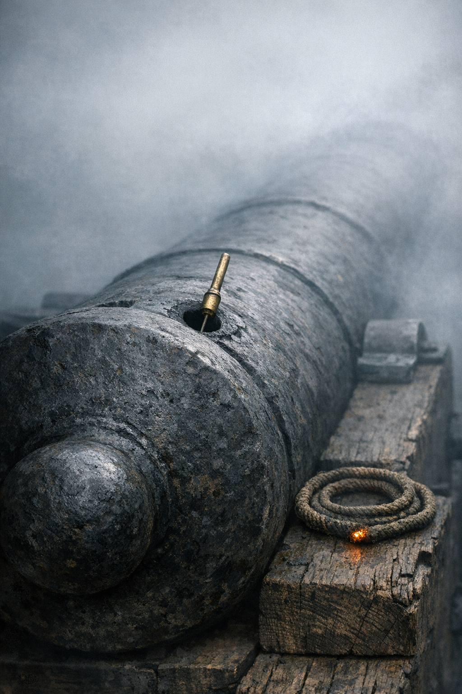

A Line of Smoke
A Line of Smoke
The Garland
He had the morning watch in four hours and the guns to check before it.
The gun deck was dark. The slow match smoldered at each station — twin orange points at the magazine hatch, two more at the forward end of the battery — and through the gun ports forward came a faint gray seam of sky. Silas moved down the starboard battery by touch and memory, aft to forward, one hand trailing along the breeches as he passed. The planking was cold through his stockings. The ship moved on its cable: not quite a roll, more a slow correction the lake insisted on, a standing adjustment to its own breath. The gun deck smelled of pitch and slow match and the mineral cold of the lake morning. The iron of gun four’s carriage was cold where his hand found it.
He started with the garland.
Eighteen shot in the rack beside gun four. He counted them by feel, both rows, the iron dense and familiar in the dark: nine in the upper row, nine in the lower. Eighteen. He moved to gun three and did the same. Eighteen. Gun two: eighteen. Gun one: eighteen. He ran his hand back across gun one’s garland a second time, upper row and lower, to be certain: eighteen.
He checked the flintlocks.
Gun one’s lock had a chipped flint. He felt the edge where it had broken, a clean absent wedge at the toe. He worked it loose from the cock, found the spare in his jacket pocket, seated it, tightened the jaw screw. Guns two, three, and four he checked in turn and found nothing else wanting.
He stood a moment at gun four’s carriage and listened to the ship. Timbers moved; the cable had a voice where it passed through the hawse; somewhere forward a water cask was working against its lashing. Nothing else.
The battery was complete. He went topside.
The sky was the color of iron filings when he came on watch, and the Vermont shore was a black line against it across seven miles of lake. No wind to speak of: a breath from the southwest that barely lifted the pendant, the lake flat and unmarked to the far shore. One of the gunboats lay anchored fifty yards off the bow, its lantern moving slightly in the calm.
At four-thirty the sky above the hills began to separate from the hills themselves, lighter above and darker below, like a joint working loose. By five the hills had shape. By six they had their green — the slopes distinct, the ridgeline clear, the maples on the upper face beginning to show the yellow-gold that meant late summer was running out. By seven the sun was above the hills and the lake was blue.
He noted the wind: southwest, three knots or less. From his station he could see the Eagle a hundred yards to the north at anchor, her rigging still, and to the south the Ticonderoga and the Preble in their places in the line. A light morning, the lake lying quiet all the way to the Head.
He worked the watch as he worked every watch: moving between the four long twenty-fours, checking the tompions, checking the tackle falls were coiled clear of the deck. The officer of the deck made his rounds at five-thirty, walked the battery without stopping, and went back to the quarterdeck. Nothing required. The lake stayed flat. A tern passed the bow working south, riding the air without apparent effort. At six bells the watch was still.
At seven bells Silas stood at the forward gun port and looked east across the water. The Vermont hills were in full sun now, the near slopes still green and the high faces just beginning to yellow. The light on the lake was direct and flat. He noted the angle of the sun above the hills — purely from habit, the way a man extends his hand to check the rain — and there was no purpose to the noting, and no reason there should be, and he went back to his station and walked the battery one more time.
At eight bells he went below. The cook had salt pork and hard bread and a pot of coffee. Jonas Fry was already at mess when Silas came down — Fry, and two others from the gun-one crew, Webb and Pinney, who had come to the Saratoga from the Preble six weeks prior. Fry had the hard bread in his hand and was examining it at close range.
“There’s something in this biscuit,” Fry said.
“Eat around it,” Webb said.
Silas poured his coffee and sat. The salt pork was good. He ate the biscuit after. Fry ate his too, still auditing it. Pinney said nothing about either and ate quickly and steadily in the way of a man accustomed to eating before the situation changed. The coffee was mostly water and mostly hot and Silas drank two cups of it and sat with the second a few minutes after the others were done. When he stood to go he took the chipped flint from his jacket pocket — the one he had replaced before the watch — and set it on the table. He had no more use for it. He left it there.
The morning drill was not a battle drill. He ran the gun-one crew through the loading sequence twice for timing — sponge, cartridge, shot, wad, run out, prime — watching where each man was at each call. When the crew held their positions it ran in under two minutes. When someone was out of his position it did not.
Fry knew the sequence. Silas’s eye went to the lesser hands: Webb on the starboard tackle fall, and Cyrus on the magazine run.
Cyrus was twelve or thereabouts, and he was Black, with the kind of thin fast frame that belongs to a boy before something heavier fills it out. His job was the simplest and the one the whole sequence depended on: take the flannel cartridge case from the gunner’s boy at the hatch, carry it to the gun at a dead run, hand off, run back. He was quick. His feet found the deck boards in some arrangement that looked like no arrangement, more like a rope run fair in the same lead.
On the first run Silas watched him veer wide around the ring bolt at the base of the main hatch coaming — six inches wide of the direct line, a small loop. He watched the second run. Wide again, same place, same amount. Not caution: habit. Third run: wide again.
“Cyrus.”
The boy stopped and turned.
Silas pointed at the ring bolt. “Step over it. Not around.”
The boy looked at the bolt, then at Silas. “Yes, sir.”
On the fourth run he stepped over it. On the fifth he stepped over it again, and his time to the gun was a half-second better.
Silas ran two more sequences through gun one’s crew, told Fry to ease the tackles, and walked aft to gun three.
Tanner was a farmer from outside Burlington, three months in the Navy and about three months of learning still ahead of him. He was large through the shoulders in the way of a man who had spent his years at grain work, and that weight served him on the tackle, but on the sponge it was wasted and slightly wrong — his arm stopping short at the end of the stroke, the sponge pulled back before it had reached the base of the bore. Silas had seen it the day before and saw it again today, twice in sequence. He said nothing. He watched it a third time to be certain of what he was seeing and then went back to gun one.
Eldridge, the gunner’s mate, came through the battery in the early afternoon with the magazine record under his arm. He was a thin New Hampshire man with the habitual expression of a man who expects the tally not to match the shelf, and is rarely surprised to find that it does. He worked through Silas’s count — flannel cartridges, roundshot, spare flints in the locker — and wrote against his record without comment.
“The chipped flint on gun one,” Silas said. “I replaced it before the watch.”
Eldridge wrote. “Three-thirty?”
“About.”
He nodded and moved to gun three’s tally. “How’s the new man coming. Tanner.”
“Slow on the sponge. Not going to the stop. His arm’s wrong.”
“He’ll produce a misfire.”
“Not yet. But he will.”
“I’ll have a look,” Eldridge said.
He moved on down the battery toward the carronades amidships and did not have a look. Silas watched him go, then turned back to gun two’s flannel cartridge tier and moved two that had been sitting at the outside of the rack to the inside where the air was drier.
The afternoon watch, another sequence drill, muster at five bells. The day went out the usual way: the watch changing, the light going off the water, the Vermont mountains running from green to the dark of early evening while the sky above them held its color long after — a wide, pale yellow that lasted longer than the light in it. Then the last of it left the hills and moved east over the lake.
At six-thirty the watch changed and Silas was off.
He went forward to the fo’c’sle and sat on the bitt. Webb was already there, and Pinney, and a Swedish sailor named Hals from one of the gunboats who had come aboard that afternoon on some errand Silas had not attended to. The lake was still and dark. The lamprey boats were out to the south with their lanterns, working their nets in slow passes, their lights moving and not stopping. Pinney had a jaw harp and was playing it with more conviction than result; the sound went out over the water and was absorbed by the dark.
Silas sat with his hands on his knees and watched where the hills had been. He was thinking about Tanner’s sponge stroke — the arm stopping short, the bore not cleared, what that would mean when the rate of fire was up. He did not think about his brother.
The last of the sky’s color left above the Vermont shore. Hals said something to Pinney and they went below. Webb went after them. Silas sat a moment more on the bitt, the lake completely dark now, and then the watch bell struck from the quarterdeck and the watch changed behind him.
He went below.
The gun deck was quiet. The guns had been covered against the evening damp, their tompions set, the tarpaulins lashed over the breeches. The slow match was out. Silas hung his jacket on the hook beside his hammock, turned to check that the magazine passageway curtain was closed, and got in.
The ship moved on its cable. He was asleep.
The Head Race
The river was running full for August. He heard it through the alder brush before he was out of the woodlot — steady, unhurried, the sound of a river that had not lost water in a week. The path to the mill smelled of pine sap and the cold mineral of the millrace; he had the roots and the soft places underfoot in his feet before he had them in his eyes.
The head race was still when he reached it, the gate closed, the channel dark between its stone walls. He walked the bank to the sluice, checked the gate wheel and the bolt, and went downstream to the flat rock at the pond’s edge.
The rock sat where the Saranac widened and slowed behind the mill dam. He had cut the nick himself two summers ago on a morning in August — a single line scratched with a cold chisel at the waterline when the river was at its working height, the height the millwheel wanted. He checked it every morning the mill was running. In the gray light before dawn he crouched at the water’s edge and looked. The water was a half-inch above the nick. Right. He straightened, went back to the sluice gate, and opened it.
The water came in quietly. He stood and listened to it fill the race — a slow trickling at first, building as the channel filled, the smell of head race mud giving way to the smell of fresh water and cold stone. By the time the uncle arrived the race would be full.
Eli Beckwith came up the path as the sky was beginning to separate from the tree line. He was a blocky man, fifty or close to it, with the round-shouldered walk of someone who had spent his years bending to things. He nodded at Asa when he came in sight of the mill and went to the head race without being told, checked the level himself, looked at the sluice gate, and went to the wheel house to check the gear. He said nothing, which was how Asa knew it was right.
They opened the wheel gate together, pulling the iron handle that lifted the gate clear of its seat and let the head race water fall onto the bucket boards of the wheel. The wheel was reluctant at first — the water filling the buckets one by one as they came under the race, the weight building until it found enough to move the whole — and then it gave and began to turn. Asa felt it through the floor before he heard it: the main shaft taking up the load, the pitman arm beginning its stroke, the sash frame starting to move in its guides. Then the sounds arrived: the shaft groaning in its bearing, the pitman arm’s long wooden complaint on each downstroke, the blade hissing through air. When the first log was set and the wheel gate cracked to advance the carriage — the ragwheel indexing one tooth forward on each upstroke of the sash, the log moving into the blade by the thickness of a board at a time — the blade bit and the full sound of the mill was present.
Sawdust drifted down to bank in the still water at the tail race.
They were cutting pine for Plattsburgh: a merchant’s contract for framing lumber, two-inch planks, for a storage building going up on the south side of the village. The logs had come down from upstream and were stacked in the yard, second-growth pine with the rings tight as stacked shingles, the bark rough under the hand. Asa took the cant hook and rolled the first log of the morning onto the carriage — the iron throat of the hook finding the log’s curve, the long handle giving him the leverage to move it — and set the bail dogs to hold it against the carriage frame and checked the cut line against the blade. Then he walked to the gate and opened it a finger’s width and let the carriage begin to advance.
The man in the log yard was Abenaki, or part — he had come back each spring for three years running now, and for the two years before that Asa had been too young to reckon how long he had been at it. He was better with the cant hook than Asa was, and he knew the yard’s particulars — which logs had shifted in the night, which had taken on water and would be slow through the saw — without being told. He came out of the drying shed when the first board cleared the carriage and ran his thumb down the face of it.
“That one’ll do,” he said.
Asa went back for the next log. “Watch the ones in the middle. There’s a pine with a dark place in the bark — might have a knot.”
The man nodded and went back to the shed.
The morning’s work was the morning’s work: log set, gate cracked open, carriage advancing on the ragwheel, blade through pine, board off the back of the carriage, reset the log for the next cut. The kerf opened clean and the smell of pine sap came with it, sharp and green, and the sawdust fell in a fine drift to the water below. After an hour Asa’s shirt was dark at the shoulders and there was pitch on his forearms where he had steadied the logs by hand. The mornings when the work was like this: the sequence clear, the grain clean, the only judgment the set of the log before the gate opened.
At noon the uncle closed the wheel gate. The sash slowed and stopped, the pitman arm swinging still. The mill went quiet.
It always came as a surprise. He had been hearing the sash for three hours and the sudden absence of it left a ringing, and through the ringing the Saranac came in — the river that had been beneath the mill noise all morning, present and unheard. He stood a moment in the stopped mill before going outside.
He washed his hands and forearms in the millpond shallows. Cold for August, the kind of cold that came up from depth, and he stayed in it until his hands were clean and stayed a little longer. He sat on the bank with his feet at the water’s edge and ate his dinner — bread and salt pork — and looked at the river.
Here the Saranac was broad and easy, not the compressed channel it became at Pike’s Ford downstream, where the valley narrowed and the banks put the current in a harder run. The channel here moved in slow ripples over the gravel shallows, clear to the bottom. Below the dam, where the water went deep over a hole in the gravel, it went dark and still. He had caught trout in that hole since he was nine. Fifty yards downstream a gravel bar stood half-exposed, the August level just reaching its shoulder. When the bar went under the river was up; when it stood clear the river was low. He had known that bar longer than the nick in the flat rock.
The uncle ate inside the mill. He always did.
The trouble came in the afternoon.
The pine with the dark place in the bark was midway through the yard, and when Asa rolled it onto the carriage he could see the irregularity plainly: the bark raised in a long oval on the west face, the wood underneath swollen around something grown-in. He set it anyway — it might be a branch scar, nothing at the core — and opened the gate.
The blade hit the knot on the second cut.
Not the clean hiss it made in plain pine. A lateral crack, sharp and wrong, and then the carriage jumping sideways as the blade deflected. He had the gate closed in the same motion. The blade rocked in the sash frame and steadied. He checked it: not broken, not jumped from its guides. The bail dogs had held the log. The carriage had shifted two inches on the bed.
The uncle came out of the wheel house without hurry, bent to the log, and ran his hand along the face of the cut until his fingers found the burl — compressed grain spiraling in on itself, tight and resistant. He straightened and walked around to the other side of the log and pointed to the bark. “There.” Then moved his finger to a slight hump above the dark place, a barely-visible rise along the grain. “The bark rises before the knot. Run your hand along it — you’ll feel it before you can see it.”
Asa looked at the raised place. He saw it clearly now.
“I saw the dark place,” he said. “I set it anyway.”
The uncle looked at him a moment, then went back to the wheel house to reset the gate.
They lost better than an hour: clearing the jam, re-setting the log with the dogs offset to bring the cut line around the burl, checking the sash guides and the blade set. The boards from that log came out narrow. Asa stacked them in the drying shed without comment.
The last board came off before the light went low. The uncle closed the wheel gate and the wheel slowed by degrees, the pitman arm losing its rhythm and dropping still. Asa racked the cant hook and the setting bar against the wall, covered the blade with the tarpaulin and weighted the corners with the flat stones that lived beside the blade housing, swept sawdust from around the wheel housing where it built up against the boards. He checked the sash guides and the pitman arm bolt.
Then he went back to the head race.
The level was down from the morning: three-quarters of an inch below the nick, a full afternoon’s draw on the pond. Not wrong for the season — the summer had been dry — but lower than he wanted. He closed the sluice gate, checked the bolt, and would know in the morning whether the river had filled it back.
He walked home upstream along the south bank, the mill behind him, the river to his left. The sky above the eastern hills still held color — a wide pale yellow that outlasted the light itself — but the hills were going dark and the path was nearly dark and he was in his feet again, finding the way. The root by the big birch. The place where the bank steepened and the path dropped a foot. The flat stone at the ford of the spring run.
His father was three miles upstream. In the house at the edge of the woodlot, in the fever that had not left him since Sackett’s Harbor. Asa had been at the mill since he was fifteen — the wages his and the account-keeping his and the daily walk between the house and the mill simply the distance he covered.
The alders gave way to mixed timber above the mill reach, and the river bent toward the path and then away, and the sound of it came and went as the trees moved between them. In the dark he could hear the water moving fast over the gravel run above the bend — cold and even, a full river, the same river it had been at dawn.
The trees came in where the path turned from the bank. Behind him the sound of the river thinned and went.
First Reports
The drill was on its third round when the longboat came alongside.
The morning of September the first was clear, a northwest wind at four or five knots making the lake slight-choppy, the gunboats at anchor to the south riding with a low scend. Silas had the gun-one crew at stations and they had run two rounds through — sequence and timing both — when the call came down through the main hatch: boat off the larboard quarter, coming in.
He stepped to the gun port.
Six oars, a man in the sternsheets with a leather dispatch case on his knees. The boat came to the entry port cleanly, held for the case to go over the rail, then backed from the hull and turned for the shore.
“Run her in,” Silas said.
The crew walked gun one back on its tackles, the carriage rolling in the deck grooves, the muzzle drawing clear of the port. They made the breeching fast and stood easy.
“Five minutes.”
He did not go forward. The word came down the battery in pieces, gun by gun, a quarter-hour later: Prevost’s column. Champlain, New York. Cavalry scouts on the roads above the village. He received it the way he received a weather report on the coasters.
He turned back to gun one.
“Again,” he said.
Fry’s chin came up a fraction.
“Finish the round.”
They finished the round. Silas walked the battery to gun three and they ran a round from there too, though gun three had not been part of the morning plan. He watched Tanner on the sponge — arm stopping short, not reaching the base of the bore — and said nothing and walked back.
At mess Fry had his bread and pork. When the coffee was mostly gone he said: “Well.”
Silas said nothing.
Fry looked at the table. “Well,” he said, quieter.
Silas poured a second cup.
The days following ran differently from the days before. Not noisier — the ship’s routine was the same, watch to watch, drill to meal — but the drills ran longer. Silas ran gun one’s crew through the sequence twice in the morning of September the second and twice in the afternoon and found time in each run that the previous run had not found. At gun three Tanner’s sponge stroke was still wrong. He watched it a fifth time and a sixth before he corrected it. A man corrected once learns. A man corrected twice learns that the first correction did not take.
Two days after the dispatch boat, the Master Commandant came through the starboard battery.
Silas heard him coming: Eldridge’s voice at the forward gun, pitched two degrees out of its ordinary register, the pitch that meant rank was present. He looked up from the flint he was reseating in gun three’s lock and saw Macdonough at gun two, crouching to examine the touch-hole. He straightened and spoke to Eldridge. Eldridge wrote in his record. They moved to gun one. Macdonough looked at the lock, the breech, the tackle falls, and spoke to Eldridge. He did not speak to Silas. He moved aft — gun three, gun four, then the carronades — his voice low the whole length of the battery, words Silas could not catch. He spent longer at gun four than at the others; Silas noted this and noted nothing else particular about it.
He went back to seating the flint. The flint did not need attention. He seated it anyway.
Eldridge came to him an hour later.
“Master Commandant wants action-rate drills. Not maintenance.”
“Starting when.”
“This evening would suit.”
Maintenance rate was about sequence: each man in his place, each motion correct, the routine building into the hands until it required no thought. Action rate was something else — not whether the sequence was right but how fast it could be held, whether it could be sustained under pressure without a man losing his place or the charge going wrong. They had the sequence. What they had not been tested on was the rate.
He called the crew at seven bells. He told Fry: action pace. All the way through.
The first round was rough. The crew had not been pushed to action pace before, not on this ship, and the difference surprised them — Cyrus a half-beat slow from the hatch, Webb’s fall a count behind, the rammer driving home but not quickly enough. Silas let the round finish without correction.
“Again.”
The second round was better. The speed was in the crew; the first round had used up the surprise of being asked for it.
The third round Fry drove. He had the voice for it — flat Connecticut command that did not wait for acknowledgment — and the crew answered it. Sponge, cartridge, shot, wad, run out, prime. In under two minutes and a quarter. Not what a blooded crew could do. Their own time, fifty minutes ago.
“Again.”
They ran four more rounds before the evening gun. When he secured the battery and let the crew go, Silas stood at gun one’s station and ran through each man’s time in his head — where the tenths of a second were going, where they could be recovered. He found where. He filed it for tomorrow.
The gun deck was quiet after. He walked the battery one more time in the dark and checked the tompions on all four guns and stood at gun four’s carriage, looking along the line of breeches. He had maintained this battery for nine months.
On the afternoon of September the fourth a low smudge of smoke appeared to the northeast.
Silas was on the main deck checking lashings on the spare tackle blocks when he saw it — gray-white above the tree line, perhaps twenty miles off, in the direction of the road that ran north toward the border. Not dark and rolling the way a building fire makes smoke. Pale and spreading, the kind that comes from many small fires, or from musketry discharged in quantity.
It sat above the trees for most of an hour.
The fo’c’sle watch were turned toward it. No one said what it was.
He watched it two minutes and went back to the tackle lashings and finished them and went below.
He had corrected Tanner’s sponge stroke. He had waited until after one of the evening drills, when the crew was securing the tackles, and he stood beside Tanner at gun three and showed him what his arm was doing: stopping short, the sponge pulled back before it reached the base of the bore. Tanner listened without speaking, tried the corrected stroke once, and nodded. At the next drill Silas watched from gun one’s position. The arm was going to the stop.
The morning of September the fifth, he was crossing the main deck on his way forward when he saw the ship’s carpenter and his mate working at the after bitt.
The carpenter was a man named Fales — quiet, deliberate, who kept the hull’s condition in his head as a system that had to be right. He was adjusting a fall at the bitt. His mate was coiling a new line that ran aft from the bitt and down toward the stern.
Silas slowed.
He knew the bower cable, which ran from the hawse to the ground tackle directly below. He knew the mooring spring, which ran from amidships to the bower chain. He had seen both since the ship was laid in the bay. This was neither. The fall Fales was adjusting ran from the after bitt down and aft at an angle — not parallel to the keel, not perpendicular to it, but off at perhaps forty degrees from the centerline — and the lead of it toward the water suggested an anchor placed well astern and to one side, so that hauling on the fall would not hold the hull in position but would pull the stern in a definite direction, rotating the ship around some forward point.
He stood and looked at the angle of the lead, the position of the bitt, the direction the line ran toward the water.
Fales glanced up at him and went back to the bitt.
Silas moved on.
He filed it the way he filed a discrepancy in the garland count.
That evening he ran gun one’s crew through the loading sequence at full pace.
Three rounds and a quarter in four minutes and fifty seconds. Better than two days prior by a full round’s worth of time. Fry had them now — at their stations before the call, Cyrus on the straight line from the hatch, Webb’s full weight behind the fall from the first haul. From gun one Silas could hear gun three working: Tanner’s sponge going home to the stop, the sound of it distinct, the full stroke reaching the base of the bore.
Three rounds and a quarter. He counted them in his head and found the count right.
Fry called the third round through. The cartridge seated, the shot driven home, the wad after it. The crew took the tackle falls and hauled. The carriage rolled forward in the deck grooves, the muzzle finding the port, the gun coming into battery.
“Again,” Silas said.
The Levy
The sash was going. He could hear it through the open mill door — the pitman arm on its long downstroke and the blade working through pine, a sound like cloth being torn carefully and at length. He was at the far end of the log yard, two boards in his arms and headed for the drying shed, when Eli came out.
Eli was not in the habit of stopping work to bring things. He stood at the mill door with a paper in his hand and looked at Asa for a moment before holding it out.
The paper was handwritten, not printed — the sheriff’s hand, the letters large and deliberate. The levy of Clinton County is hereby called to service, to muster at Plattsburgh no later than the first day of September, 1814. There was a list of names at the bottom, family names with given names beside them in a second column, and he found his own without trouble.
He read it twice, the way he read any account.
“I’ll manage the mill,” Eli said.
He went back inside. The sash was still going.
Asa put the boards down against the shed wall and folded the paper twice and put it in his jacket.
He went to the house that evening.
The river was running high and loud where the path came close to the bank above the mill reach — he could hear it from a distance, the water pushing through the narrows below the birch timber with more force than it usually carried in August. Inside the house the lamp was burning low. His father was in the back room, as he had been most of this week: the fever running bad, the kind of week where you kept the window cracked and changed the cloth and hoped.
Asa sat on the edge of the bed.
His father opened his eyes. Not the fever’s eyes, which looked at things that were not there and did not stay on anything. These were Nathan Beckwith’s eyes — his father’s face, thinner now than it had been, the cheekbones closer to the skin — and they were present.
“There’s a levy,” Asa said. “Clinton County. My name’s on it.”
His father was quiet for a moment. Then: “You know the river better than any man Mooers’s got.”
He paused.
“Tell them.” His eyes moved to Asa’s face. “Tell them what you know.”
It went gradually. The way a fire goes when you stop feeding it — his father’s eyes were still open but they were looking at the far wall at something else. Asa sat for a while after that. The room was quiet except for the lamp and the sound of the river below the window.
Then he got up and went to his room and took the musket down from the wall.
In the morning Eli was at the mill before him.
Asa came down the path with the musket and the blanket roll and found Eli at the sluice gate, doing what he did every morning: checking the bolt, checking the level in the head race against the nick in the flat rock at the pond edge. When he turned and saw Asa — saw the musket, the pack — he went into the mill without speaking and came back out with a powder horn and a shot pouch.
They were his father’s. He knew them by the horn’s shape and by the initials cut into the flat end of the stopper: N.B. — a small, patient cut with a knife. He had seen them sitting on a shelf in the mill’s back room for better than a year and had not asked how they had come there. He took them now without asking.
“Tell them you know the river,” Eli said.
He went back into the mill. The wheel gate opened. The water found the bucket boards and the wheel began to turn — the slow first resistance of it giving way, the main shaft taking the load, the pitman arm finding its stroke. Asa stood at the mill door and listened until the sash was fully going and the mill was at its work. Then he turned and walked south.
He joined the levy at the junction of the Beekmantown road, where some forty or fifty men from the county had gathered in a rough column. Some he knew by name; some by face from market days or the logging roads; some not at all. They walked south.
The road ran between woodlots and cleared farm lots, the fields showing August stubble, the ground hard and pale under the dry summer. To the east, through gaps in the tree line, the lake showed: gray-blue and flat and wide, wider than it ever appeared from the mill or the path above it, the Vermont hills barely darker than the August sky behind them. He had seen the lake all his life from a distance. It looked the same from the road.
The man beside him on the second day was Rufus Holt, a farmer from the north of the county, about thirty-five, carrying a long rifle in the crook of his arm with the ease of a man who had carried the same rifle into October woods for fifteen years. He walked at an even pace, uphill and down, and did not talk unless he had something to say. He knew Asa slightly — Eli had planked the floor of Holt’s hay barn two winters past, and Holt had the farmer’s way of carrying accounts: who had done honest work, what had been settled and what was still outstanding.
“Your uncle’s mill,” he said, partway through the morning.
“That’s right,” Asa said.
They walked for a while without speaking. The road bent east and the lake came through the trees again.
There was another man Asa took note of: Isaac Webb, about his own age, a blacksmith’s striker from the village who had signed on the day before the levy notice came out. He had been in the company five days by now and was making the most of it — walking near the front of the column, using words like interval and dress the line with the ease of a man who had recently learned they were words and was finding them natural. He was not wrong about the words. He was just wearing them too new.
The men talked as they walked — about Prevost’s numbers, about Macdonough’s fleet on the lake, about what had happened at Chazy and what might happen next. The numbers grew with each day. Asa mostly listened. He had no better numbers than anyone else.
They came into Plattsburgh from the north road in the afternoon of the second day.
The earthworks were on the south bank of the Saranac, freshly dug — the turned earth dark red-brown against the dry August ground, the angled gun berms and trench line running east along the river toward the lake. Men were working in the trenches: carrying earth in barrows up to the berm line, mattocking at the hard ground below. Most of the workers were Black men, free men by their movement and bearing, working under the direction of a regular-army corporal who stood at the top of the near berm with one hand resting on the flap of his cartridge box. Asa noted this without stopping. Free men worked where wages were paid; the trench was being dug and someone was digging it.
In a field south of the river a company of regulars in blue coats was drilling — the two-rank formation, the front rank going to one knee, the rear rank elevating. The commands came across the water flat and sharp. The movement was quick and precise in a way that the levy’s two-day march had not been.
The column turned at the main street and walked east toward the lake.
At the east end of the street, where the buildings thinned and a gap opened between the last warehouse and a frame house beside it, the lake was visible — and in the bay below Cumberland Head, at anchor in the gray-blue water, the masts and yards of the American squadron.
Asa stopped.
He could count six masts clearly above the warehouse roofline, and two more at a lower angle further out — smaller vessels, sitting lower on the water. The largest set of masts was the furthest in: three-masted, the yards crossed square, a ship that sat heavy and broad at the waterline even at this distance. He had seen that ship from upstream in the spring, he thought — just a shape on the lake from the mill, something new on water that was usually empty. He had not known it then for what it was. He knew it now.
The column moved. He moved with it.
The levy was assigned ground south of the river, back from the lower bridge on the village road. The companies sorted by township and Asa found his mess and staked a tent with Holt and Webb and a man named Veeder, from the north townships — broad and quiet, about Holt’s age, who had brought a good ax and a wool coat and contributed to conversations mostly by way of a short sound at appropriate intervals that might have been agreement.
The camp filled as the light went. Cook fires started along the line and the smell of wet wood and boiling pork came with the smoke. The talk of men settling in — the small practical arguments about ground and pegs and who had the fire iron — moved through the tents and subsided.
The Saranac was close. He could hear it in the gaps between the camp sounds — a rough and constant sound, not the low wide sound of the mill reach where the river spread across its gravel and moved without hurry. Here it ran fast and pressed, carrying the weight of everything upstream hard toward the lake a hundred yards off. He knew it was the same river. It did not sound like his river.
He lay on his blanket and listened to it. Webb was still talking somewhere behind him — explaining something to Veeder, or to no one in particular — and Holt was already quiet, and the cook fires burned down along the line, and the camp sounds thinned.
Tell them you know the river.
He had the levy paper in his jacket pocket, folded twice. He had the powder horn and shot pouch on the ground beside him. The river was the last thing he heard.
Spring Lines
He had the morning watch and the starboard battery to walk before the bell. September the sixth, the sky clear and pale in the east, the lake going from black to gray in the early light.
Silas walked gun one aft to gun four: tompions in, breeching fasts on all four carriages, flannel hatch on the magazine passageway closed and its lashing correct. He put his hand to each touch-hole in turn and found no moisture on the breech faces — the last three mornings had been dry, no dew thick enough to matter on iron. He checked the flint in gun one’s lock, found it sharp, and moved aft. At gun three he tested the frizzen spring with his thumb and found it stiff and right. At gun four he straightened and looked through the port.
Nothing on the lake.
Cumberland Head ran its long dark shape into the open water to the north, and beyond the headland the lake was empty and gray. He had looked every morning since September the first and found the same. He looked now, held the view for a ten-count, then pulled the tompion from gun one’s muzzle. Checked the bore clear. Seated the tompion again.
At half past eight the sound arrived.
He was checking the breeching on gun three when it came — from the north-northeast, from over the land, not a sound of the ship or the water. Light artillery. Not ship’s guns; not a long twelve’s report, which he would know at twice this distance. What came now was lighter, smaller, arriving at a range he could not put a caliber to.
He stopped work and held still.
A second report. Then a third, at a different pitch — two guns at least, maybe three. They came in short sequences, three or four reports with pauses of half a minute between, the intervals unequal. He counted what he could hear and found fourteen or fifteen distinct reports in perhaps twenty minutes.
Fry had his head turned at gun one’s port.
Webb and Pinney had both stopped working and stood listening with their faces toward the ship’s side.
The sequences went on for twenty minutes and then stopped. He waited. They started again briefly — four reports — and then stopped for good. He went back to the breeching and finished checking it. When he walked forward past Fry, Fry said nothing and he said nothing and they both let the silence stand.
The news came down through the main hatch near the end of the watch, passed gun by gun along the battery in the usual way. The militia engaged a British column north of Beekmantown. Most of the militia withdrew from the road. Silas received each piece as it came and held it with the others.
The British are on the road to Plattsburgh.
A pause after that piece.
Eldridge came down from the main deck himself an hour later. He stood in the battery and said it: the regulars — Wool’s people — had conducted a fighting withdrawal south from the Beekmantown road to the Saranac line. The British right column was at the north bank of the river. Then he went forward again without further comment.
Silas went to his guns.
That afternoon he crossed the main deck on his way forward and saw the working party at the taffrail.
On the morning of September the fifth he had seen the ship’s carpenter Fales running a set of falls from the after bitt down and aft at forty degrees off the centerline — not the bower cable, not a mooring spring, the lead of it toward the water suggesting an anchor placed well astern so that hauling would rotate the hull rather than hold it. He had stored that observation and moved on. Now the full arrangement was there to look at.
Three men from the boatswain’s crew were making fast the last of the new cable to a fitting at the stern post. The kedge line ran from the post aft and at an angle, deep into the water — he could not see the anchor below the surface but he could see the lead of the line entering the lake at a point well astern of the ship and to larboard, a placement that bore on the stern rather than the bow. That was the kedge.
He looked for the spring lines. He found them — already rigged, from before this morning, running from the bower chain at the hawse back to cleats at two positions amidships. He had seen them before without assembling them with the rest.
Now he assembled them.
Bower cable forward from the hawse to the ground tackle below, as it had always been. Spring lines from the bower chain back to two points along the hull’s midship. Kedge cable from the stern post aft to larboard, the anchor set well back of the ship’s counter.
He traced the geometry and worked it through. If the bower cable were let go — cut, or paid out entirely — the ship would no longer be held forward. The stern still had the kedge. Hauling the kedge line in with the bower gone, the stern would be drawn aft and to larboard; the bow would swing in the opposite direction on whatever point remained — the chain’s end on the bottom, the dead ground below. The hull would describe an arc. Not advance; turn. Come around and end facing the direction it had come from.
He stood with this long enough to be certain he had it right.
Then one of the boatswain’s crew at the taffrail looked back at him, and he moved forward.
The morning of September the seventh the British army was visible from the gun ports.
Not the men. The range was too great for men. But above the tree line on the north bank — two miles from the ship’s anchorage, or a little more — a half-dozen columns of smoke rose into the still morning air. White-gray, steady, not the pale spreading gray of musketry but the settled columns of cook fires in a large camp. They rose straight and fanned slightly at the top where a high light air moved.
The lake below the smoke was empty.
The ship’s routine went on around the observation. The carpenter’s crew worked aft of the mainmast. Eldridge was forward with his record. The cook’s noise came up from the galley. Silas walked gun one through gun four and back — tompions right, breech faces dry, locks set — and at gun one’s port he crouched and found Cyrus there, both hands on the lower sill, his face turned toward the north bank.
The boy did not speak.
“Cyrus.”
He looked.
“Go below and count the flannel supply. Count the pass-boxes as well and tell me what’s there.”
The boy slipped from the port and went without a word.
Silas straightened and checked gun one’s bore once more and reseated the tompion. He stood at the port another moment looking at the smoke columns on the north bank. The lake between the ship and the bank was clear water and empty. He went below.
Past midnight he lay in his hammock and heard the guns.
He had not been fully asleep. The lake’s motion at anchor was different from motion under sail — the slow rhythmic roll of a hull on an incoming swell rather than the purposeful lean of a vessel making way — and this particular motion had kept him near the surface of sleep since they laid in the bay last spring. He lay in the dark and listened to the familiar sounds: the anchor cable creaking at the hawse, the low continuous sound of the water against the strake near gun one’s port, the long slow groan the ship made at the hanging point of the anchor chain when the swell found it.
The guns came from the south. Not the north.
He felt it through the planking before he heard it in the air. South bank — the American position on the Saranac — and not a sustained action. A gun, then a count of fifteen seconds, then another gun. A pause of thirty seconds, then two more. He lay still and counted. Twelve reports over perhaps half an hour. No pattern he could find in the intervals.
A probe, or a test.
The gun deck around him was quiet, but not with the quality of sleep. He could hear it in the stillness — men awake and holding still in their hammocks. Someone toward the fore end of the deck shifted and resettled. No one spoke.
The twelfth report came and after it nothing.
He lay still and listened to the water against the hull.
Beekmantown Road
The river was behind him when the column stepped off, and he listened to it recede for the first mile north until the road bent and the sound went with it.
He had crossed the Saranac at the lower bridge in the dark before four o’clock, moving with the column, and that river — the lower river, pressing fast between its banks — was nothing like the water he knew at the mill. It had sounded like itself: urgent, final, not the patient working sound of the head race. He had heard it and then the road had taken it away, and now there was only the road going north in the dark, the ditches smelling of damp grass and August weeds, the sky overhead black and dense with stars.
Thirty men ahead of him. Thirty behind. He could hear them rather than see them — the soft scuff of shoe leather on packed earth, the occasional knock of a canteen iron against a cartridge box, one man up ahead blowing his nose with some regularity into the dark.
Holt was behind him, three men back. Asa could hear Holt’s stride: even, a little heavier than the men between them, the same pace as on the road from the county two days prior. He did not seem to walk faster or slower according to anything.
Webb was near the front, where he had placed himself when the column dressed and stepped off. His voice came back once in the first half-hour — something about the road, something Asa couldn’t make out — and then not again.
The sergeant walked the column’s right side without speaking.
His name was Cole. Sergeant Cole, from Wool’s regulars — the 29th Infantry, one of the men sent north three days ago to drill the county levy on the south bank before they were needed. He had not drilled them in the sense of making their movements smart; he had worked their loading sequence, standing at the end of the rank and watching each man go through it and correcting the faults he found. His corrections were short — a hand repositioned, a word about the ramrod, once a flat demonstration of the half-cock position until the man’s thumb found it right. Three mornings ago he had watched Asa go through the full sequence and moved on without a word. Asa had not known whether to be relieved or not.
Now Cole walked the column’s right side in the dark. The fields opened out as the tree lines broke, the sky widening overhead, the farms invisible but present — a fence rail here, the darker shape of a barn’s roofline there. After an hour a gray started in the east. Asa watched it between the trees. The morning was cool; he had been cold at the start and now he was warm in his coat and the powder horn rode at his hip where the strap of his shot pouch crossed his waist.
Two men ahead of him were talking in low voices. He caught: not the whole army, only the right column. Then a piece he couldn’t make out. Then: four thousand. He did not know where the number came from.
They were still north of Beekmantown Corners when the shots came.
Four or five muskets from the front of the column, not together — a scattered, uneven discharge, as though several men had each decided separately to fire at the same moment. A pause. Then more from further ahead, and shouting from that direction. Then the column stopped.
He stopped walking and stood in the road looking north.
The forward half of the column had stopped too, but it was not organized. The front men were turning around. And then — before anything could sort itself — the front dissolved. Men came back down the road, first at a walk, then faster, some of them running outright. They went past him on both sides with their muskets at different angles and their faces pointed south.
Then from the left — from the tree line west of the road — a volley. One sound assembled from many, a single compression of the air that landed on his chest before his ears had finished recording it. He had heard scattered musket fire before; this was different in the way the sash blade dropping was different from someone knocking on wood — the same family of sound but of a different order, something the body registered before the mind did. Then another volley from the same direction and the full column was broken.
He took four steps south before he caught himself.
Cole was standing still at the column’s right edge.
He was not running, not shouting. His musket was at order arms, the butt on the road beside his right foot. The militia came past him on both sides and he stood in it. His face was toward the road.
“Those who are stopping, face north.”
He said it at a volume he might have used to ask a question. The men kept going past him.
“Those who are stopping, face north.”
Asa stopped. He turned around.
Holt was ten feet back, already turned, his rifle up and his eyes on the road north of them. Veeder was there — broad-shouldered, not running, his musket at his hip looking north. Four or five others had stopped among the forty who had been in Asa’s part of the column. Webb was not among them. The rest were going south down the road.
Cole looked at what remained.
“Good,” he said. “Follow the column through the Corners.”
For the next three hours Asa understood the day only in small pieces, each piece sufficient.
Cole set the sequence: to that fence, fire, reload, fall back to the oak. The fence was a split-rail fence along the east side of the road with gaps in it. Behind it Asa loaded and came to his feet and fired at the road to the north. The British were there. They were not running. They were in column, red coats, moving steadily south, and they had not stopped. He loaded behind the fence — bite the cartridge, prime the pan, down barrel, ram, return the rod — and came up and fired again and then Cole said the oak and he ran for it.
He found he could do this if he did not think past each step. The sequence was all there was: move, fire, reload, fall back. It went the way a chain of cuts on a log went, one stroke at a time, not two at once, the blade finding its work if you kept it moving. Cole’s voice was what kept it moving. He gave the word and Asa moved.
They came through Beekmantown Corners. There were houses set back from the road, a low stone wall running along the west side, a well in a farmyard that Asa registered and did not think about. Cole put them behind the stone wall. Asa leaned his back against it and loaded: bit the cartridge’s end, shook powder into the pan, cast about the frizzen, ran the charge down. He could hear the British column in the road — not a sound of running men, the tramp of a great many feet at a walk, steady, coming.
He stood up. Looked over the wall. Fifty yards up the road: a soldier in a red coat.
He fired.
He did not see what happened to the man. His hands were already at the horn, measuring the next charge, before the smoke had settled enough to see through.
Captain Leonard’s guns were on the south face of Culver Hill, two 3-pounders on the road itself when Asa came up through the gap in the fence line at the base of the hill.
The first gun fired as he came through.
It was nothing like the musket fire. The sound arrived in his chest before he heard it with his ears — a concussion that seemed to press his lungs sideways and release them, a shock he felt in his back teeth and the balls of his feet simultaneously. He stumbled once and kept his feet. The smoke rolled south of the gun in a flat gray-white cloud and the gun crew moved through it already running the piece back to the road crown.
He loaded behind a stone wall on the hill’s downslope. The cartridge shook in his hands. He felt it and corrected: two fingers on the base of the cartridge the way Cole had shown him, thumb on the side of it, and it held steady enough. He charged and primed and ran the ball down and seated the ramrod in its thimbles.
Cole was moving behind the line, low along the wall. He said stand and they came to the top of the wall and fired over it.
The road below was dust and smoke. The British column had not broken. It had slowed — Leonard’s guns were firing grape now, he could hear the difference from the round shot, a harder tearing sound rather than the single crack — but it had not stopped. It was still coming at a walk, steadily, the red of it visible in the dust.
He reloaded behind the wall and counted what he had in the box: seven cartridges.
The withdrawal stopped at Halsey’s Corners.
There was a farmyard there — fence rails and a banked ditch on the road’s west side, a shed behind. Cole put them on the bank. They fired once more over the rails and then the British advance held: the column stopped, checked at the edge of the range. A silence came onto the road, a different silence than the spaces between volleys.
Cole walked the line behind the bank. “Stand easy,” he said.
Asa sat down against the bank and opened his cartridge box. Three paper rolls. He turned them in his hand and put them back.
Holt was four feet away, running a ball down his rifle with the short starter, unhurried, as if this were a particular kind of work and he had always done it this way. Veeder was at the rail to Asa’s left, loading, not talking. Two men Asa didn’t know were further down the bank. Five men total. Out of forty.
The rest of them were on the road to Plattsburgh. Most had gone at the first volley, before Cole’s voice cut through. They had gone, and that was a fact, and there was not much to think about it.
The cold came back. He had not noticed cold since the first shots.
They marched back south in the afternoon, the five of them in loose order behind Cole.
The British did not follow to the river. After the last ridge above the town Asa could see the south bank below him — the earthworks, the regulars drilling in a field, the lower bridge. The road down to it was quiet.
No one talked much. His legs were working steady; the shaking had passed a mile or so back. He was hungry, the way hunger comes after a long time of not noticing it.
The river came up through the tree line first as sound — the lower Saranac, fast and pressed between its banks, the same sound it had made when the column crossed it before dawn. He knew it for the same river that ran past his uncle’s millpond three miles upstream, the same water in a different mood. Here it moved like it always moved here: in a hurry, carrying the valley’s weight toward the lake.
They crossed the lower bridge and came into camp.
In the camp south of the Saranac, Cole found an officer near the regimental tent line — a blue coat and epaulettes, a man Asa was not close enough to name. Cole spoke with him for two or three minutes in a voice too low to carry. Then he came back.
He walked to Asa first. Then he looked at Holt. Then he turned and pointed at a third man standing at the edge of one of the fires — a man about Asa’s age, broad-faced, from a different part of the column during the withdrawal; his name, Asa thought, was Luce, from somewhere south of Beekmantown Corners, though he was not certain.
“You three,” Cole said.
They moved toward him.
“You’re going to Pike’s Ford. Upstream. You’ll have two companies.”
Asa didn’t know the ford by that name. “Where is it?” he said.
“Three miles upstream from the village. West of the road.” Cole looked at him steadily. “Shallow ford. Bad ground on the north bank for a formed column.”
Asa heard: three miles upstream. Which put it three miles above the lower bridge and the village. Which put it at the same reach of river as his uncle’s mill. He knew that stretch of the river. He knew the ford — he had crossed it in April when the snowmelt was still coming down, thigh-deep and fast on the south approach, and he had crossed it in dry August, the stones dry for the top half foot, the current low and quiet.
He had crossed that ford perhaps forty times.
“I know that ford,” he said.
Cole looked at him for a moment.
“Good,” he said.
At Anchor
He walked the battery before first light — September the eighth, the second morning of the standoff — and found nothing different.
Tompions set on all four guns. Breeching fasts correct on all four carriages. The flannel hatch on the magazine passageway closed and its lashing right. He went down the line from gun one to gun four in the dark and checked the touch-holes by feel, breech faces dry on all of them. At gun one’s port he crouched and looked north.
The smoke was there. Three columns above the tree line on the north bank, and the trace of a fourth, and a pale drift that might have been a fifth if the light had been better. They stood without moving in the still air and spread at height where a high wind found them. Cook fires. A large camp settled in.
He counted: three definite, and the trace.
Below the smoke the lake was empty. He had checked every morning since September the first and found nothing north of Cumberland Head, and he checked now and found the same. The British army was on the north bank and the British fleet was not on the lake, same as it had been since the seventh. He did not expect to find something different. He pulled the tompion from gun one’s muzzle, checked the bore clear, and seated it again.
The day was the same as the day before.
Fry ran gun one’s crew through the loading sequence that afternoon, and Silas watched from amidships without calling any correction.
What he was watching: the pace.
The sequence moved as it should move. Fry at the breech with his cartridge pricker; the sponge swab going in full-arm on Webb’s drive, reaching the bore’s base before it came out; Pinney with the cartridge ready, the route from the hatch clear; wad and shot, the charge seated, the gun run out on the tackles, the lock set. In the sequence there was no man standing still while another finished. Each step produced the next without a gap.
He counted three rounds against his estimate and found four minutes and forty seconds.
Better than last week by seven or eight seconds. He said nothing about this to Fry. “Again.”
On the second run he watched Cyrus.
The boy came up from the magazine hatch at the proper point in the sequence and ran, but the route had changed from the week before. Not the arc past the ring bolt at the base of the main hatch coaming — the route Cyrus had been using through every prior drill — but a cut along the starboard bulwark, tighter, the pass-box held flat for the clearance between the stanchions. The turn at the forward edge of gun one’s carriage was practiced and clean. Silas put the difference at four or five seconds over the previous route.
He had not told the boy to find this route. The boy had found it himself.
“Four minutes thirty-one,” Fry said, when it was done.
Silas said: “Again.”
On the third run the sequence ran the same as the second — the same timing, the same positions, the same absence of wasted motion between steps. Silas watched it complete and walked the battery back to gun one.
Eldridge came through the battery in the mid-afternoon with the word from the first lieutenant.
Macomb had asked the fleet for volunteers to fill out the infantry line on the south bank. The numbers of regulars were thin; militia were coming in from the counties but were unreliable at a fixed post. The ship was sending a dozen men ashore. The list had been assembled by the first lieutenant and approved.
Silas was not on the list.
He did not ask about this. His place was the starboard battery: four guns, four crews, the garlands and the magazine count and the drill that had gone from four minutes forty to four minutes thirty-one in two days. Macomb’s line was not his post.
An hour before the boats were lowered the men who had been selected came up from the fo’c’sle with their sea bags. Through the main hatch Silas could see them gathering near the entry port — twelve men, he counted, some with boarding pikes, some with only their bags. Bates from gun four was among them, the bag over one shoulder, his face toward the entry port. A man from the forecastle watch stood near the chain plate with the small canvas bag he had brought from the fo’c’sle.
The first lieutenant said something. The men went over the side.
Silas went back to his guns.
The following morning — September the ninth — Eldridge came through with an amended allocation from the gunner’s record.
More grape shot and canister relative to round shot than had been authorized last week. He went gun by gun and read the revised figures to each gun captain, moving forward from gun four, stopping long enough at each gun to be sure the count was clear.
For Silas’s section: two round shot per gun to be removed from the garlands and replaced with prepared grape charges.
He worked gun one to gun four after Eldridge was gone. The two aftermost round shot came out of each garland rack with the sound of iron on iron; he set them in the shot racks below and laid the grape charges in their place. The charges were bound in flannel and twine, the powder distributed through the charge rather than concentrated in a single mass. He worked through all four guns and when he was done each garland held sixteen round shot and two grape charges where it had held eighteen round shot the week before.
He stood back from gun four and considered it.
Round shot was for range: it carried its force in a single mass, six hundred yards, seven hundred. Grape was for close work — the charge opened on firing and swept a cone, effective at two hundred yards, most useful at less. The British ships would round Cumberland Head in column; the bay’s geometry gave them no other approach. Once inside, they would have under half a mile of water to cross before they were on the American line. If they came in tight —
He laid the garland covers back and checked the lashings on all four guns.
Sixteen round shot and two grape per gun. That was what there was.
The musket fire came at the end of the second dog watch, when the light was leaving the lake.
He was running the evening battery check — tompions, breeching, touch-holes — and the sound arrived before he had placed it. He stopped and stood still.
Not ship’s fire. It came from the south, from the direction of the village and the south bank earthworks: muffled and flattened by two miles of open water and the trees along the river. Not cannon — the reports were too short and too many. Musket fire, sustained. Not a drill’s sequential fire but a rolling, unordered exchange, individual shots overlapping and continuing.
The gun deck had gone quiet.
Fry was at the forward bulkhead with his hand on the hatch coaming. Webb had set down his work. Tanner had stepped back from gun three’s carriage. At the magazine hatch Cyrus stood on the third rung with his head at deck level and his eyes on the planking, listening. No one spoke. No one had been ordered to stop; the work had stopped by itself.
The fire kept on.
Silas counted what he could: one, two, three. Then it was continuous, individual reports coming faster than he could separate them. He stopped counting and listened to the pattern instead: sustained, not a brief probe, many men firing in confusion or earnest or both. The sound came from behind the trees on the south bank, further than he could see.
It lasted approximately twenty minutes.
Then it slowed: a shot, a silence of several seconds, another shot. Then nothing. The lake sounds came back into the quiet — the anchor cable, the water on the hull, the ordinary sound of the ship settling on its chain.
He looked at Fry. Fry said nothing.
He walked gun one through gun four — tompions seated, nothing displaced — and came back to his station. The lake north of Cumberland Head was the same: dark at the base of the headland, empty. He did not know what had happened on the south bank.
The watch changed at twenty hundred. He ran the final check — tompions, lashings, slow match extinguished, magazine passageway curtain closed — and sent the crew below.
Below: Fry was already at the mess table when Silas came down, and two men from gun three across from him, Tanner among them. Salt pork in the pot, hardtack, coffee going around. Silas took his place at the bench and helped himself.
They were talking about the musket fire.
Fry thought it was a probe at the lower bridge, the British testing whether Macomb’s men would stand a night action. Tanner said twenty minutes was too long for a probe — a probe was over in five minutes, that was what probes were. The other man from gun three said the county militia was probably nervous, said they would fire at anything that moved in the dark until somebody told them to stop.
Silas listened and ate.
He worked through the grape charges. Sixteen round shot and two grape per gun: if the British flagship had finished fitting at Île aux Noix and the fleet came down tomorrow, the round shot would do the first work at range, and the grape would wait. It would wait until the hulls were close enough. If they came in close.
Fry asked whether anyone thought Bates had made it to the south bank position before dark.
Silas said: “Probably.”
The coffee went around. He filled his cup and held it. The mess noise came through the bulkhead from the other crews — the low, settled sound of men who had been at anchor long enough to stop counting the days. He drank his coffee.
He said good night to Fry and went forward to his hammock.
The ship moved the way it always moved at anchor.
Pike’s Ford
The road from Plattsburgh to the ford followed the south bank of the Saranac for most of its three miles, and Asa knew every foot of it.
He had walked it since he was fourteen — coming in to the mill before first light and going home in the evening with water still in his shoes. He knew the dogwood stand at the second bend, the place where the bank steepened and the path narrowed and smelled of clay in spring and dry dust in August, the gap in the alder hedge where the river came close to the south bank and you could hear the current talking over the stones. Two companies of Clinton County men were behind him on the road, marching in loose order, their gear knocking in the September quiet. Cole walked the column’s left side without speaking. The morning was bright and still and smelled of August’s end — dry leaves starting into the dust, the iron edge of cold dew burning off the grass.
Two miles out of the village, with the tree line still closed on both sides, Asa heard the ford before the road showed it to him.
The Saranac at the mill reach was patient — broad and slow, the current spread across its bed, the sound it made low and continuous, the kind of sound you stopped hearing after a few hours because it was always there. The ford was different. The river shallowed over the limestone shelf and found its own voice in the shoaling: a faster, brighter sound, a higher pitch, like a smaller millrace pressed through a tighter flume. He had known it all his life. When the road bent and the ford came through the last trees, he stepped out of the column without being told and went to the bank.
The water was clear over the south approach, running fast and shallow above the limestone shelf where the crossing was shallowest, the stones dark and visible below. Across the ford the north bank was brush and alder — branches trailing over the water, cover for anything that came down to it. The south bank here was lower, flat ground running back before it met the brush. Good ground for a line.
Cole came up beside him.
“Beckwith. You said you know this ford.”
“Yes.”
Cole looked at the water. “Show me.”
They went in together. The water was cold from the first step. The limestone shelf was solid underfoot — flat and regular, the current running over it at knee height.
“Where does the bottom shift?” Cole said.
“The middle.” They walked to the shelf’s edge. “Here.” Asa felt the gravel begin under his foot, the limestone ending and the river bottom going loose, each step pressing down before it found stone beneath. “Three yards of this.”
Cole stepped onto it and felt it move under his weight. He did not comment.
“The current pulls south,” Asa said. “Left, from our side. A man carrying kit and moving quick, it takes him sideways before he corrects. You want to angle up against it two steps before the loose gravel, come in from the right of the approach. The drift brings you back to center.”
They crossed. The water deepened in the middle — thigh-deep, the current stronger — and then shallowed coming out the other side. Just before the far bank the bottom shifted once more: a step down, two feet, and then back up. Asa put his foot on it without looking.
“Here,” he said. “Man stepping for the far bank goes wrong. He steps out of the water and drops. Goes in to the hip in the dark.”
Cole looked at the step and then back at the south bank, gauging the sequence a man would go through.
They climbed the north bank. Alder roots in the mud, poorly drained. Downstream to the right, an alder stand came out over the water, the bank undercut in the shadow below.
“Right-hand edge,” Asa said. “Under those alders, fifteen feet from the main crossing. The bank drops three feet. Silty bottom. Dark in there even in the day.”
Cole stepped carefully to the edge and looked down into the water at the alder roots. Then he came back.
“And at the north end of the shelf,” Asa said. “Between the limestone and this bank. There’s a flat stone that lies at an angle. If a man steps on its high edge instead of the face, it turns the ankle.”
Cole waited.
“That’s the main crossing.” Asa paused. “But in the willows, twenty yards east.” He turned upstream. “There’s a submerged log. You can’t see it from the bank. A man looking for a crossing away from the ford would try there — the bottom looks right. He’d step on the log and it’d roll.” He looked at Cole. “The current off the far end takes him into the deep water.”
Cole looked at the willows for a moment. Then he looked at Asa.
“Good,” he said.
They crossed back.
Cole set the companies to work on the south bank after the survey.
He walked the bank twice, stood for a minute looking at the ford’s full width, and then placed the positions: the main position at the ford’s center, back twenty feet from the water; one at the right-hand edge where the alder stand came close to the south bank; one at the left-hand edge, covering the approach from the bend upstream. He pointed to each and named men.
“Luce. Right-hand position. Clear back to the willows.”
The man he pointed at — Asa’s age, broad-faced, from country south of Beekmantown Corners — moved to the right bank without a word. Luce. Asa had thought that was the name since the march back from the Corners. Now he was certain.
They cut.
Holt was good with an ax. The same quality he had with his rifle — unhurried, the strokes placed deliberately where they would do the most work, not chopping at a thing but reading where it needed to give. The alders came down clean and their smell was green and sharp, and the willows at the bank’s edge took more work because their wood was fibrous and did not split but only bent and frayed and had to be cut twice. Asa’s arms ached after the first hour and he kept working.
By mid-afternoon the three positions were cleared. He stood at the center position and looked across the open bank to the ford. The cut brush lay stacked at the water’s edge; the sight lines ran clear across the water to the north bank’s alders, each branch and root visible. He gauged the distance to the far bank: thirty yards, near enough. At thirty yards a smoothbore musket was reliable. He had fired at a man in a red coat at fifty yards at Beekmantown and not seen the result through the smoke, not known where the ball had gone. At thirty yards, a man who aimed would hit within a foot of where he aimed.
Cole walked the three positions at evening without stopping at any of them. He said nothing.
The cook fire was fifty yards upstream behind a rise, sheltered from the north bank. The smell of it came through the trees — woodsmoke and salt pork in a pot, the ordinary sound of two companies at rest.
Asa ate next to Holt. Solomon Veeder came and sat on the log’s near end with a tin cup in his hand.
Veeder was from the north end of the county, a farm above the outlet, thirty-five or close to it. He was broad in the shoulder and did not talk much. He had brought a good camp ax and a wool coat and had held through the full Beekmantown withdrawal without, as near as Asa could tell, any change in expression from one end of it to the other. He was not a man who seemed to feel that what he did not say should be supplied by others.
Holt poured coffee and handed the pot. Veeder took his cup and held it.
They were quiet. The fire talked low. Upstream, an owl called once and got no answer.
“You think they’ll try the ford or the lower bridge?” Holt said. He said it to both of them.
“Lower bridge is fortified,” Asa said.
“Right. Which is why they’d come upstream.”
After a moment Veeder said: “They’ll try both. Lower bridge, upper, ford. Everything at once or as near to it as they can manage.”
Holt considered this. “Then they’re as good as people say.”
Veeder turned his cup slowly in his hands. “They’re as good as people say,” he said.
Holt laughed — a short sound, more acknowledgment than amusement.
Veeder did not.
Asa looked at the fire. He counted the cartridges in his box without opening it: twenty-three. Three left from Beekmantown, twenty drawn from the quartermaster on the road up. He counted them again.
He thought briefly of his father three miles upstream in the house and then he did not.
He took the midnight watch.
At the ford the dark had changed everything except the sound. The shoal-noise was the same — that brighter, faster sound of a river shallowing over stone — but the bank was a mass of shadow, the cut brush invisible, the north bank a deeper darkness than the south. Where the moonlight caught the main riffle at the ford’s center, it glinted in a pale strip. The alders across the water were a line of black above the strip.
He walked the south bank from the right-hand position to the left. No light: his eyes adjusted, the moonlight sufficient for the bank’s shape, the undercut near the alder sinkhole to his right and known. He placed his feet for it without looking. He counted his steps from the right-hand position to the left — thirty-eight steps, with a fraction at the end depending on how he planted his foot.
He already knew the distance without counting. He had walked this bank in the dark many times, going downstream from the mill to the trap lines his uncle ran when October came. But it was useful to have the number fixed and certain. You could set it beside the other numbers — the thirty yards to the far bank, the three yards of loose gravel in the middle, fifteen feet to the sinkhole’s edge — and know where everything was.
He stood at the center position and looked at the ford.
Then, from downstream, cannon. Three reports, possibly four, separated by intervals of fifteen or twenty seconds, coming from the direction of the village and the fortified lower bank, two miles off. The sound arrived first in his ears, not his chest — not the compressed wall of air that the Beekmantown volley had been, but a flat report reaching through the trees, brief and gone. American guns at the lower bridge, a probe answered or a nervous watch. Not his business. His business was the ford.
He stood and waited until the last report came and the night went quiet again.
Then he walked the bank back from the left position to the right, placing his feet, counting his steps again. Thirty-eight and the fraction. He came to the right-hand position and stood at the bank’s edge and looked at the willows twenty yards east in the moonlight. They were still. The log was under there, invisible in the dark water. He could see exactly where it was.
On the morning of the eighth Cole began the drill.
He placed four men from Wool’s regiment in two ranks on the cleared ground above the bank and stood aside.
The first rank fired together — a single discharge — and stepped back before the smoke reached head height, turning to load. The second rank moved forward one step into the space and fired. Between those two volleys: a breath, no more. The first rank was already loading when the second rank’s smoke rolled south. Cole put the four men through it three times. Each time it was the same: fast, clean, the ranks exchanging their positions with a precision that had nothing mechanical about it — it was too fast for mechanical, too continuous. The sequence no longer existed as steps. It had become a single act that happened to require eight hands.
Then Cole put the companies in formation.
It was bad from the start. The first rank fired too slow; by the time they stepped back, the second rank had not moved, and where the first rank’s men met the second rank’s men there was a confusion of arms and bodies. Cole walked to the fault, placed each man in position, showed the step — first rank back, second rank forward, and pointed. They tried it again. Better. Then again. Better still.
On the third run Webb — second rank, near the right end — fired his piece while the man in front of him was still stepping back.
The shot went into the ground at an angle. The man in front of Webb flinched and turned.
Cole did not say Webb’s name. He did not raise his voice. He walked to the front of the formation and turned to face them and said: “Observe.”
He loaded at full speed, all nine steps, and said nothing during any of it. His hands did not explain themselves. Bite, prime, frizzen, barrel, ball, paper, ram. Asa watched the hands. Each step came from the one before it without a pause for decision: the bite produced the priming, the priming produced the closed frizzen, the frizzen produced the charge, and the charge produced the ball, and so through. Not because Cole was thinking ahead. Because the step produced the next step without thought being required. It was like watching the ragwheel on the log carriage: one tooth advancing on each upstroke, the pawl catching it and the carriage moving forward, not because the gearman decided to advance but because the wheel came around and the pawl was there.
“Again,” Cole said.
The companies went through the sequence.
Asa drilled. He kept the nine steps in front of him as a sequence — bite the cartridge; prime the pan; frizzen; barrel; ball; paper; ram — and he kept each step as a separate act, one thing at a time, not looking to the next step until the prior step was done. One tooth. One tooth. He drilled it until the beginning arrived without his having to find it and the end arrived where it was supposed to arrive, and that was most of it.
Cole moved behind the line. At Veeder he stopped. Veeder’s left hand was too far forward on the forestock — the heel of the hand pressed against the side-plate of the lock instead of on the barrel. Cole moved the hand back two inches along the stock without speaking. Veeder looked down, felt the new position, and nodded.
Cole came to Asa. He looked at the musket, took the butt of the stock in one hand, and tilted the muzzle slightly right — a small correction, two or three degrees.
“It’s canting left,” he said. “The shot will go left.”
Asa moved his left hand inward along the forestock and brought the muzzle back until it felt level. Cole looked at the line of it, then stepped back.
“Fire.”
Asa aimed at the birch at the far edge of the cleared ground. He pulled his father’s powder horn from his belt, measured, loaded, aimed again. He fired. The smoke came and then went. The bark was off the birch’s near side, white wood showing, at approximately where he had aimed.
Cole said nothing. He pointed at the cartridge box.
Asa loaded and fired. The second shot was where the first had been.
Cole watched the smoke clear. He looked at Asa for a moment with no expression that Asa could read, then turned to face the companies.
“First rank,” he said. “Load.”
Asa bit the cartridge.
“First rank. Load.”
Powder in the pan. Frizzen closed.
“First rank. Load.”
The main charge down the barrel. Ball in. Paper in.
“First rank. Load.”
The Kedge
He had gun two’s vent fouled with carbon from the last drill, and he went at it with the vent pick in the gray of the morning watch, working by touch, the ship easy at anchor in the September calm. The lake lay flat and cold through the gun port to the east. The Vermont hills were dark against a sky that had no particular weather in it yet, just the even gray of first light coming in off the water. He seated the pick in the vent and turned it and felt the grain yield and came back with the pick and tried again until the channel ran clear. He dried the touchhole with his cloth, ran his thumbnail across the face of the vent, and set the pick down on the carriage ledge.
From above, through the grating of the main hatch, footsteps crossed the deck. Two men, deliberate-paced. He knew one of them by the sound — Fales, the carpenter, whose rounds were methodical and the same every morning, starting aft and working forward, reading the ship’s structure the way another man reads a ledger. The footsteps slowed somewhere above the grating and then the voices came down through the slats, partial and compressed, not meant to reach the gun deck.
Fales first: the low, confirming tone of a man going over something already decided. Some words lost before they arrived. “…let go the stern, cut the bower, haul on the kedge—” A pause; something the mate said that did not come through the grating. Then the mate’s voice from a pace or two further along the deck: “…long as the kedge cable holds.”
The footsteps continued forward and were gone.
Silas was still for a moment. His hand was on gun two’s cascabel.
Let go the stern anchor. Cut the bower cable. Haul on the kedge. He had heard this described once, three years past, on the receiving ship at Boston Harbor — a sailing master covering the method with a group of new enlistments, calling it by its name: winding. Turning a ship at anchor, without headway, in a confined space. Set a kedge well astern, rig the fall to the capstan, let go the stern, cut the bower, haul — and the hull came around.
He had stowed the lecture and not thought of it since.
He moved to gun three.
The starboard battery bore northeast. He had known this since the squadron anchored in the bay: the Saratoga lay at anchor to bring her starboard side toward Cumberland Head and the channel between the headland and the Vermont shore. Any British fleet coming down from the Richelieu had to round the Head and enter in the only lane available, come in column because there was no room to come any other way, run under the American guns before it could form. The engagement would open on the starboard battery.
He cleaned gun three’s vent while his attention moved forward along the chain.
It would continue on the starboard battery until the starboard battery could no longer fire.
Stern let go. Bower cut. Kedge hauled. The hull rotating. The stern drawing aft and to larboard, the bow held at its forward point, the ship swinging through north to east and past east until the port battery came around to bear on the British line — on the same hull and rigging the starboard guns had been firing at. One hundred and eighty degrees. What had faced away facing the enemy now.
He checked gun three’s face and moved to gun four.
The port battery carried four long twenty-fours. He knew this the way he knew the roster of his own guns: it was a fact about the ship. The guns were there. They had garlands. If the Saratoga wound on the kedge, those guns would bear on whatever remained of the British line, with whatever remained in their garlands, from guns that had not been fired.
He set the pick on gun four’s carriage and checked the vent. Clear from the last drill; no fouling. He dried it and checked the touchhole by feel and confirmed it open.
He had the geometry by the time he set the pick down. Stern let go, bower cut, kedge hauled: the hull comes around and the port guns bear. He went through it once more and found no fault. The mate had said long as the kedge cable holds. Whether the cable held was the quarterdeck’s part and the battle’s part. He had the geometry, which was enough.
He stored it where confirmed facts went. He knew that place. There were things he had stored there — in the winter before last — that did not belong to any chain that resolved into action. He moved back to gun two for the next item on his list.
In the first hour of his off-watch that afternoon he crossed to the port side.
He walked across the gun deck and stood in front of the port battery.
Four long twenty-fours, same carriage dimensions as his own, same elevating screws, same garland racks tacked to the bulwark between the gun ports. The port side ran from bow to stern with the same smell as the starboard side — pitch and slow match and oiled iron — the same worn planking at the working positions, the same low light from the ports. Not a mirror image: the hatch ladders ran down the centerline, the mast partners sat where they sat. But close enough that he knew where everything was without needing to learn it.
The man at the forward gun was Gideon Marsh. Quarter-gunner of the port battery, Massachusetts, a few years older than Silas. He had been pointed out to Silas in passing during the squadron’s first week at Vergennes, in the spring, and not spoken to since. He was working the frizzen of the forward lock: lifting it against the spring, testing the tension, setting it down.
He looked at Silas when Silas crossed over. He did not say anything.
Silas looked at gun two.
The flint was cracked. A clean diagonal fracture across the striking face, top left to bottom right. Visible in five seconds if a man was looking at the lock.
“Your number-two gun’s flint is cracked,” Silas said.
Marsh looked at gun two, then at Silas. “I know,” he said. “I’m replacing it this afternoon.”
Silas nodded.
He moved his eyes to the garlands. The port battery’s complement ran without the amended allocation his own guns had received — seventeen in one garland, eighteen in each of the other three. He counted without appearing to count, a habitual movement of the eye that did not require any particular turning of the head. He noted the count. Not his guns. Whether Eldridge had sent the amended order to the port battery or held it back was not in his part of the record.
Marsh looked at him steadily. He said: “Looking for something?”
“Just looking,” Silas said.
He turned and went back across the gun deck to the starboard battery.
At supper he had salt pork and hardtack and coffee at the mess table below decks. Fry was across from him. Two men from gun three. The talk ran to the musket exchange on the ninth — still unresolved from anyone’s vantage on the ship, the conclusions dividing between a British probe at the lower bridge and a south-bank picket that had misread a shadow — and from there to the lake, and when the British fleet would come south. No one had a reliable answer. They had been waiting twenty days.
Between the hardtack and the coffee, one of the gun three men said that Marsh had been at his number-two gun for most of the afternoon. Had pulled the lock, examined the fracture, found it ran deeper into the body of the stone than it showed on the face. Replaced the flint, fitted the new jaws, dry-fired three times against the pan. The new stone sparked clean.
Silas finished his coffee.
He did not say that he had been the one to notice the fracture.
He went back to the starboard battery when the evening watch was called.
Gun one: flint seated, jaws firm, no lateral play in the cock. He turned the elevating screw and felt the tension hold and returned it to pitch. He ran his thumb across the vent face. Garland count: sixteen round and two grape, the amended allocation, right. He moved to gun two. The same check in the same order. Flint, vent, screw, garland. Sixteen and two. Right. Gun three: the sponge leaned clean against the bulwark, the lock mechanism in order, the vent clear and dry, the garland carrying its full complement. Right. Gun four: flint seated, vent clear, screw at pitch, sixteen round and two grape in the garland.
Everything was right.
He stood at gun four and looked along the battery toward the bow. Four guns, all in the condition they were supposed to be in. The kedge cable ran from the stern post aft into the dark water of the bay, the anchor placed well astern and to larboard where it had been since the fifth of September. Across the deck, the port battery sat in its ports with Marsh’s new flint in gun two’s lock and three full garlands and one that ran seventeen.
Through the gun port the lake was dark. The Vermont hills had gone to silhouette against the last light to the east. He looked north toward the headland. The water beyond Cumberland Head was the same darkness as the rest of the lake, the same nothing it had been every morning and every evening since September first.
He set the tompion on gun four’s muzzle and checked the fit. Snug. He set it, moved to gun three, set it, moved to gun two, moved to gun one. Each tompion fitted and pressed home in order.
His four guns. He stood at the center of the battery and looked at them. They were right.
Two Ranks
The drill was better.
Not good — Cole had not said good about the formation — but it was better than the day before and the day before that. The line held longer before it frayed. Men who had been fumbling for the cartridge box were now finding it without looking down. Asa moved through the sequence without counting: bite the cartridge, prime, frizzen, pour, ball, paper, ram, set the cock. He had stopped counting after the fourth run two days ago. His hands moved and the rest of his attention moved with the ford — the way the current changed pitch where it turned off the limestone shelf and fell into the gravel, the lower note of it in the shallows at the downstream alder bank, the higher pitch where the shelf’s eastern edge narrowed the flow.
Cole called: First rank, load. The line moved.
Veeder, six men to Asa’s left in the second rank, had his musket shouldered before the call. His thumb was too far forward on the wrist — Asa had noticed it on the last run and said nothing, because correcting was not his part. Cole would find it. Cole found everything. He walked the formation between calls and found things.
He found it on the second run. He walked behind the second rank and stopped at Veeder without speaking. He reached up and moved Veeder’s thumb back a half-inch along the wrist, stepped back. Veeder looked at his thumb. Cole said: “Recoil will find it.” He moved on.
Asa thought about the ragwheel.
The ragwheel on the log carriage advanced one tooth per upstroke. The pawl caught the tooth; the weight of the log held it; the carriage moved forward by the width of one tooth, whether you were thinking about it or not. You could think about something else entirely while the carriage indexed forward. You could think about water, or where the current was deepest this particular morning, or the way the gravel bottom at the center of the ford shifted a half-inch overnight as the September flow worked it south.
That was what had happened with the sequence. He hadn’t planned it — it had reached the ragwheel’s state on its own. Bite. Prime. Frizzen. Pour. Ball. Paper. Ram. The parts were in the body. His attention could go to the ford.
Cole called halt.
He stood in front of the formation with his arms loose at his sides. He looked at the line from left to right and back. “Again,” he said.
The British soldiers appeared in the middle of the afternoon.
Asa saw them first because he was at the left-hand position — the upstream edge — and that position had the longer sight line along the north bank. Three men, red coats, moving east along the near edge of the tree line on the far bank, upstream of the ford by perhaps forty yards, coming toward it at a deliberate walk. Not hiding; not rushing. Moving the way men move when they have been told to look at something.
Cole was there in a moment. Asa had not spoken, had only turned his head. The sergeant appeared from the right as if he had been behind Asa for some time.
They watched.
The three soldiers reached the point directly across from the ford’s center and stopped. The forward one — coat darker at the shoulders with old rain or old wear — crouched and looked at the water. Then he looked at the south bank. At the cleared positions in the brush. He said something to the man on his left, who nodded without shifting his eyes from the water.
Cole had told them: if you see reconnaissance, watch. Do not fire. Too far for a reliable shot in this light, and firing would confirm the position.
The forward soldier was reading the ford’s surface — looking at the run of the current, at what its face showed about the bottom. He pointed downstream, toward the alder bank on the far right, where the sinkhole sat under its overhanging growth. He could see the alders from where he stood. He could not see what was under them: the bank dropping three feet, the silty bottom that would swallow a man’s leg to the knee before he understood it was not a crossing.
He’s reading the surface — that’s all he’s got, Asa thought.
The soldier pointed again, upstream this time, toward the willows on the east edge of the ford where the submerged log lay in three feet of current. It looked, from the far bank, like a sheltered secondary approach — the current breaking off the log’s downstream end in a way that suggested shallowing. A man looking for a second line might step there and find what he expected, and step again, and find the log rolling underfoot, and find the deep water off the far end.
He thinks it’ll cross.
The soldier straightened and spoke again to the others. One of them produced a small memorandum book and wrote something. The forward soldier stood looking at the south bank a moment more. Then all three moved on, west along the tree line, away from the ford.
Cole went back to the right-hand position without speaking.
Asa stood a moment longer at the alder overhang’s edge. The ford’s bottom was not knowable from the far bank, and this had always been true, and the war had not changed it.
At dusk a rider came in from the village. A militia corporal, a sore horse, dispatch papers folded into a leather case. He spoke to Cole first, then to the company captain. Then the company captain spoke to the men at the cook fire.
There had been a probe at the upper bridge the night before. The regulars held it without difficulty. A British patrol had also been seen roughly a mile west of the ford, looking for a crossing above Pike’s — seen by pickets and withdrawn without entering the water.
Asa knew that section. He had fished it every June he could remember. The river bent wide there, spreading into a gravel flat that read shallow from the bank but dropped twelve feet into a clay ledge cut straight down before you were ten yards out. There was nothing there to cross on. The British patrol had looked at it and learned what it was. They were working east, eliminating options.
At the cook fire, Holt thought the British would come at the lower bridge. “It’s in the town,” he said. “Town’s worth taking.”
“They’ll try everything at once,” Veeder said.
No one spoke for a moment. The fire snapped.
Cole was eating three yards off, sitting on a log with his back to the fire. He did not say anything.
Asa looked at his hands. He thought Veeder was right. He thought the sergeant, sitting with his back to them and his mess pan resting on his knee, also thought Veeder was right.
The fire burned down. The company sorted itself toward the tents. Holt went to the upstream position. Asa went to the center.
He drew the midnight watch.
The camp went quiet sometime after eight — the fire banked, the tents settling into the shapes of sleeping men, the sound of the river taking over once the last voice stopped. Asa walked down to the south bank in the dark without a lamp, moving by the sound of the water and the feel of the path underfoot, which by now he knew well enough that his feet found the turns without deciding to.
The ford sounded different at night. Louder — the dark took away the daytime noises that you stopped registering after they had been there long enough, and what remained was the current, close and specific. He knew these sounds from before the army had come. He did not find it strange at midnight.
He walked the south bank from the right-hand position to the left. He did not count steps — he knew the distance without counting it now. His feet found the root, the soft place where the bank dropped a half-inch, the point where the path bent north before straightening again to the left-hand position. He stopped there.
From across the ford, from the north bank, he could hear the British encampment.
Faint. Distance and trees between them. But present: the sound of a fire kept low but burning; voices, too far to make out words, just the pattern of men talking in the dark; something that might have been a horse shifting on soft ground. He had known, in a general way, that the enemy was three hundred yards upstream and across the river. He had seen the red coats that afternoon.
He turned to walk back toward the right-hand position.
He was four paces along the bank when a sound came from the north bank directly across from the ford’s center. Something in the brush — not a careful sound, not the sound of a man moving at a military crouch. Something moving without care, with the directness of a large animal, or a man who was not expecting to be heard. A branch snapping, then a pause, then the sound of something brushing through undergrowth.
He stopped.
He brought the musket level and thumbed the cock back — two stages, half-cock, full cock — slowly, one degree at a time, no sound that could be heard above the current. He stood with the muzzle toward the north bank and listened.
Nothing. The water ran. From the encampment upstream a voice said something and was answered quietly. A nightbird started up in the willows to his right and cut off.
He waited. The cold off the September river was the kind that had no wind in it, just the air settling down against the water where the air was warmest. He was aware of his breathing and of his fingers on the stock and of the temperature of the iron barrel under his left hand.
He waited. One minute, then another.
The sound did not recur.
After a time — five minutes, perhaps more, he did not track it — he lowered the musket and eased the cock back to half with the same care he had used to draw it. He did it right. He reset his grip.
He heard the sergeant before he saw him — a footfall from his right, from the direction of the center position, deliberate but not loud. Not trying to be silent; making enough sound that a man watching the far bank would know what was coming and not mistake it.
Cole stopped beside him. He looked at the north bank. The brush was still. He looked at Asa.
“You waited,” he said.
A pause.
“Good.”
He moved on down the bank toward the right-hand position and was gone.
Asa was alone. The ford ran below him in the dark, the limestone shelf invisible under the current, the gravel trough beyond it shifting by degrees each night as the water worked it south. The north bank was quiet and dark. Whatever had moved in the brush had moved on, or settled, or hadn’t been anything that needed a decision.
He stood on the south bank. The ford running. The north bank empty.
Cumberland Head
He had checked the flints at midnight, and again at two, and again before he left his hammock. He knew they were right. He came to his position at gun #1 in the dark and did not check them again.
The gun deck was dim — not black, because the slow-match tubs at each gun gave a low red glow, and the ports were half-open and the lake returned some measure of the stars. Enough to see Fry at his station, Webb and Pinney at theirs, the shapes of the crews at guns two, three, and four settled into their positions before he reached his own. The match tub at gun #1 held two cords, smoldering, and the smell of them filled the deck — acrid and dry, a smell that in the past seven months had come to mean one specific state of preparation and nothing else.
Cyrus was cross-legged on the grating at the magazine hatch, the pass-boxes stacked beside him, waiting for the cartridges to come up through the flannel curtain one at a time. He had already arranged the boxes in the order he would carry them. He did not look up when Silas passed.
The garland at gun #1 held sixteen round shot and two grape. Silas had known this before he reached his position; he had verified it in the dark the same way he had verified the flints, with his hands and without a lantern. He put his hand to the breech of gun #1 — cold the way iron was cold at four in the morning in September, the lake working its temperature up through the hull — and checked that the tompion was out and the gun run in and ready. He had verified this too. He set his hand on the cascabel and then took it away.
Fry had stepped back from the breech when Silas arrived. He stood at the gun’s flank — his station — and said nothing.
“All right,” Silas said.
Fry nodded.
The word had come down sometime after three — Silas had been in his hammock, not sleeping, his attention in the flat-water state between sleep and waking, and the word had reached him whole: British fleet out of Île aux Noix. On the lake. He had been at gun #1 within ten minutes. Every man in the section was already there. He counted them in the dark by position and found his count right.
The wait was long.
He had not expected otherwise. The fleet out of Île aux Noix, fifteen or more miles to the north, coming down through the narrows in whatever wind existed before dawn, could not appear off Cumberland Head before midmorning at the earliest. This was arithmetic — distance, wind, and the movement of large vessels through a confined channel — and it produced a known and long interval that did not vary with how he felt about it.
He stood at his position and waited.
The gun deck moved with the lake — the slow pull of the current against the hull, the bower cable straining at intervals as the lake’s set pressed against it, the planking creaking when a man shifted his weight. The breathing of fourteen men at their guns. The smell of the slow match. Someone three guns to the right coughed once and covered it. The match cords burned at their steady rate, the red glow of each tub steady and unchanged through the dark.
He listened to the ship.
The sounds were the same sounds he had heard on every watch for seven months: the cable working against the hawse, the water against the hull in its constant small iterations, the occasional low groan of a plank settling under its load. He registered them without separating them. His attention moved across the gun section — Fry at his station, Webb at the right rear, Pinney on the left tackle — and found each man in his place.
The ports went from black to the color of ash. Then the lake appeared beyond the port’s opening — flat in the early calm, going from invisible to the color of pewter as the sky behind the Vermont shore began to admit light. The mountains appeared: a dark uneven line at first, then gaining their proper height and shape as the sky shifted from gray to pale to blue. The upper ridges caught the first light. It moved down the slopes in the way light moved in September mornings — slow, then all at once, the shadowed valleys filling last.
The wind was from the northeast.
He had noticed it when the lake first showed through the port: the surface carried a low chop to the north that was absent to the south, the ripple coming down from the direction of the narrows with the wind behind it. Two or three knots. Light. It would be enough to move a full-rigged fleet.
To the north, Cumberland Head closed off the upper lake. He could see the headland at the rightmost edge of his port’s field of view — the low dark line of the point, the tree line at the tip of it, the water in the near foreground. Beyond the head, the lake was not visible. Whatever was on the lake north of the head would not be visible until it came around.
He waited. The mountains across the lake were clear and bright in the early light, the way they were on September mornings when the air was cold and the sky was clean of cloud. In a week or two the upper slopes would be past green entirely.
The first sounds came sometime before seven.
They arrived without a clear shape to them — not a gun report, not a voice — just a texture added to the quiet, carried down the lake with the northeast wind. Something like the sound of a harbor in a fog before you raise it — a whole that has not yet broken into its parts. Something like the distant movement of a large number of things, each contributing a small sound to a whole that was not yet identifiable: oars, possibly, pulled together in sets; rigging being adjusted under load; the creak of hull and spar from multiple vessels at once.
The sounds did not resolve from inside the gun deck, where the ship’s own noise blurred any distant source. He listened and did not say anything. The men at the other guns were listening too — he could tell by the way each man had gone still — not the stillness of waiting.
He kept his attention on the port.
After some minutes the mast tip appeared.
It came around the edge of Cumberland Head at the extreme right of his field of view — just the truck, and a length of bare spar below it, moving in a slow arc as the vessel rounded the point. Then a second mast, lower, to the right of the first. Then the upper portion of a sail coming down from the mast in an irregular billow, not yet sheeted home.
Fry said: “There.”
“Watch your post,” Silas said.
Fry turned back to gun #1.
They came in column.
The channel behind Cumberland Head forced it — not wide enough for a line abreast, and the bend of the point committed any vessel rounding it to the American guns before it could form its line or see what it was approaching. He had understood this geometry when he first looked at the anchorage’s position seven months ago and recognized the head for what it was in relation to the bay. The column that came around the point now was not a surprise.
The gunboats led, rowed into position below the headland — low in the water, their oars working, moving into the open bay in sets of two and three. He counted eight before his angle cut off the lower water. Then the Chubb, a sloop, single-masted, her sail coming home under the northeast wind as she bore south. Then the Finch, her counterpart, slightly smaller in his port’s field. Then the Linnet: brig-rigged, two masts clear against the sky, working toward her station in the line with the wind behind her.
Then the Confiance.
She came around the head under shortened sail and she was large. He had carried the figure since August — thirty-seven guns, a sixth-rate frigate; it had come with the dispatches off the shore boats and been passed down through the chain in pieces, and he had stored it as he stored any relevant material fact. The figure was now a vessel filling his port’s field of view at something near three hundred yards. He could see her gun ports along the near side in the morning light. He counted them: twelve, thirteen, fourteen, fifteen — and the edge of his port cut off the rest of her broadside before he reached the end of it.
He stopped at fifteen.
There were more beyond what he could see. A thirty-seven-gun frigate running out a full broadside would put more than fifteen guns on the water. He knew this without having to calculate it.
He registered it the way he registered any number — the count of the garland, the powder weight, the range to a fixed mark — and returned his attention to the port.
The British fleet moved to its fighting position.
The sounds came down to him through the hull and through the air at the same time: chains running, the deep note of anchor cables finding their lengths, the creak of vessels settling as the anchors held. Through his port he could see the Confiance swinging to her anchor to the northeast, her bow turning as the cable tightened, her broadside coming around to bear on the American line. Commands he could not hear the words of. The rattle of gear being secured. Then a quiet descended over both fleets.
Wind in the rigging. The water against the hull. The northeast chop against the gun ports in its small, persistent way.
Both fleets at anchor.
He was aware of the slow match burning in the tub. He was aware of Fry at the gun’s flank, still and in his place. He was aware of Cyrus somewhere behind him with the pass-boxes arranged in order, waiting.
The order came down the chain — Eldridge’s voice, low and even, the same voice he used for a drill: Run out.
“Run out,” Silas said.
The gun crews moved. The tackles came taut; the trucks squealed on the deck planks, the sound of weight rolling forward on wood coming from four guns near-simultaneously, the muzzles appearing in the ports in sequence: gun #1, #2, #3, #4. The gun deck filled with the noise of it and then settled into its new arrangement, the guns run out to battery, the muzzles in the September light.
He stepped to the vent of gun #1. He took the priming horn from his belt and charged the vent with powder, then covered the vent with his thumb while he settled the horn back to his belt. He checked the flint by touch — the flint he had checked at midnight, and at two, and before he had left his hammock, and which was right, and which was still right, and which would be right when it was needed.
Fry was at the lanyard.
Silas moved him aside with one hand on the shoulder. Not a word. Fry stepped without hesitation — he had known since the previous evening that this was how it would go, and he did not need to be told twice or once.
Silas took the lanyard himself. He let it run through his grip until he felt its tension. He settled his weight in his heels and faced the port.
The Confiance lay to the northeast at something near three hundred yards. Through the port he could see her guns run out and her ports open — dark circles in the morning light, each carrying its own arithmetic.
The slow match smoldered in the tub beside him.
He heard the order pass from the quarterdeck. One word, moving down through the chain in the way orders moved on a ship — each voice passing it to the next — until it reached the gun deck and came to him in Eldridge’s voice, still level, still unhurried:
Fire.
Before Light
He came awake in the dark and lay still and heard the ford.
There was no sound that had woken him — or none he could name. The camp was quiet; the cook fire had been out for hours, the coals gone gray, no heat reaching as far as his blanket. Somewhere to his left Holt was breathing, a slow even sound, and past Holt the darkness, and past the darkness the ford running over the shelf in the dark. He lay still and let his attention find it: the lift of the water at the limestone’s east face, the lower note across the gravel trough, the pitch of it familiar in the way a thing was familiar that he’d learned before he was old enough to call learning anything. He gauged the level by that pitch alone. The river was close to where it had been two days ago. Not risen in the night.
He set his blanket aside and found his musket in the dark by feel.
The south bank was twenty feet from where he’d lain. He crossed to it without a lantern — his feet knew the ground’s pitch — and stood at the water’s edge and looked north.
The north bank was invisible. The alders were shapes against a darker shape, and between them and himself the ford moving, carrying what thin light the stars offered. He could hear the shelf clearly from here, hear the gravel trough, the turn of the water around the far alders and into the slot of the sinkhole beneath. He knew all of it without looking at it directly. He had crossed this ford in April water and August water and this was September water, and the September water was telling him what it was doing.
A step, from downstream along the bank.
He didn’t turn. Cole came and stood beside him — no wasted motion in the approach, the same as always — and they looked at the north bank together. The north bank held nothing: black alders, the ford’s sound, sky offering nothing yet toward light.
After a minute Cole said: “Today.”
He moved on down the bank.
By four the whole company was up.
No orders had brought them. He hadn’t heard orders at all — the men came to their positions in the dark without speaking, took their places on the south bank and stood looking north. Veeder arrived to his left; Luce was downstream at the right-hand position; Holt moved past with his rifle to the upstream end where the bend approach had to be watched. The cook fire stayed cold. No one said to leave it. No one lit it.
Asa was at the center, twenty feet back from the water’s edge, the cut brush giving him a clear line to the ford. He held his musket and looked across at the north bank. The same bank it had been for four days. The alders. The dark slots in the bank that were readable to him and not to them.
The darkness east of the tree line began, slowly, to thin.
The light came up the way it did in September when the air was clear and cold and the sky was clean of cloud.
First a gray resolution of shapes: the far bank’s alders gaining edges from the dark, the ford’s surface going from black to a pale moving sheet. Then color arriving above the tree line — a pale yellow with no warmth in it, just light spreading from the east the way light spread down the Vermont ridge across the lake on clear mornings. The north bank came into the morning and it was empty.
He looked at the ford in the light. The limestone shelf was visible, gray-white under the shallows, the current bending over it in the place it always bent. The flat stone at the far end lying at its angle. The alder bank downstream and right, the dark slot under the alders where the bank dropped three feet into silty water. The willows upstream and left, the place where the submerged log lay in eighteen inches of water and looked from the north bank like a secondary crossing.
Both invisible from the north bank. He’d known that since he was nine years old.
The cold was in his feet through his boots — the September damp working through the leather. He reached into his jacket pocket and found his hardtack and bit off a piece without tasting it. He was aware of wanting the day to be over.
The wait was long.
The sun came over the hills to the east and moved its light across the river without warming anything for a time. Men held their positions — some standing, some crouching behind the cut brush — and the north bank held its emptiness the same way it had held it since dawn: complete, unbroken, the alders still and the ford still and no movement in the trees beyond.
Asa ate the rest of his hardtack without tasting that either. He moved once along the south bank, walking from Luce’s position to Veeder’s and back, his feet counting the distance — thirty-eight steps and a fraction — without any decision to count them. He’d walked it enough times that the count lived in his feet now, the way the loading sequence lived in his hands. He went back to the center and stood with the ford in front of him.
He thought briefly of the bend in the river three miles upstream, where the Saranac widened into the slow stretch above the mill.
Just before seven, smoke lifted from the tree line to the west and north — three pale columns going straight up in the still air, the British camp waking and beginning to move. He watched the columns for a minute. They rose and thinned and bent in whatever air moved above the trees.
Veeder said: “They’re getting ready.”
No one answered. The smoke stayed above the tree line, thinning and spreading, and the north bank stayed empty, and the morning continued to pass.
He felt it before he heard it.
A change in the quality of the air from the east — a shift in the weight of the morning, the way the air changed before a hard northwest rain moved in, the pressure of it settling differently against the face and the chest. He had felt this at the mill before: the shift before weather, the way it moved differently through the body than ordinary morning air. Not a sound. Just the difference.
Then a report, from the east.
It arrived through the chest wall before it resolved in the ears — a low, flat concussion, distant, not like Leonard’s three-pounders at Culver Hill which had been immediate and violent and faster than thought. This was the distance between here and the lake, compressing the event and delivering it through miles of water and ridge and tree line at something lower than sound. He felt it once, and then again after a pause, and then a third and fourth.
Then the accumulation: reports building on each other the way pressure built against the mill dam in the spring thaw — individual forces becoming one sustained force until there were no intervals, until the whole east was a rolling of the air that came in continuous waves from the direction of the lake.
He looked east.
Above the tree line, above the low ridge between the ford and the lake, gray-white smoke was growing in the sky — spreading and drifting south, visible above the ridge line and thickening as he watched.
The lake was beyond the ridge. He could not see it from the ford. He knew where it was.
He looked back at the north bank.
Cole was six feet to his right. He was watching the north bank the way he had watched it at three in the morning, the same steady examination, unhurried, as if the north bank were something he had been given to look at and had not yet finished looking at. The air from the east continued its rolling, wave upon wave of it, the battle he could not see made audible as weather. Cole did not look east. He watched the north bank.
Asa watched the north bank.
The ford ran over the limestone shelf in the morning light. The smoke grew above the ridge to the east. The company held their positions along the south bank and the September morning was clear and cold and the north bank was empty and continued to be.
Port Battery
The lanyard pulled taut and gun #1 fired.
The carriage drove back hard on its breeching rope — a shock that traveled from the planking up through the soles of his feet and into the bones above — and the gun smoke came through the port in a rush, filling the section from deck to beams before the report finished its run. Silas was at the vent with the sponge-man already moving.
“Sponge.”
The sponge ran home.
“Load.”
Fry had the cartridge. The flannel bag into the muzzle, then the rammer, then the shot from the garland — solid iron, weight of a fieldstone — then the wad, then the rammer again.
“Run out.”
The tackles came taut. The carriage rolled forward, the muzzle finding the port. Silas was at the vent.
“Prime.”
He primed the vent, covered it with his thumb, settled the horn back to his belt.
He fired.
The sequence was the same sequence.
Cyrus ran with the next cartridge from the hatch. He came down the starboard bulwark at a dead run, the pass-box held flat to clear the stanchions, and set it in the groove at the foot of the gun and was gone before Silas reached it.
Two rounds in five minutes per gun: that was the pace. They did not hold it cleanly on every sequence — there were seconds lost at gun #3 on the third run when the rammer-man overshot the breech and had to reset, and on gun #1’s fourth sequence the sponge went short and he called it again — but the pace held across the section, and forward and aft the battery held it also, and the Saratoga’s starboard guns were firing two to three times for every one of the Confiance’s returns.
This did not mean they were winning the exchange. The Confiance’s guns were heavier.
When her shot struck the Saratoga, the ship received it in the particular way a vessel receives something proportioned for her — a full-body flinch, articulated up through the planking from the point of impact. He noted each strike: aft of the section; forward, above the waterline; a second forward hit that opened something in the hull planking above gun #2’s port because after that shot a thin line of light appeared in the deck above the port’s coaming that had not been there before. He noted the line of light and moved to gun #2.
The smoke was building at the gun deck’s overhead. The ports let some of it out and the northeast wind took the rest south, but the rate of production outpaced the ventilation, and by the second half of the first hour the deck was visible eight feet in any direction and no more. He moved the section by position memory and by the sound of each crew’s work.
At gun #2, on the fourth run through the sequence, the right tackle’s splice gave. Not fully parted — it slipped, and the gun ran out short and stuck with the muzzle still inside the port. He crossed to gun #2 before the splice opened further, rigged a strop from the forward bitt pin as a replacement lead, and the gun ran out cleanly on the next command. Forty seconds, possibly less. He was back at gun #1 for the fifth sequence.
The gun deck was loud with the cumulative weight of the battery firing — not the individual report of any single gun, which the closed space absorbed and diffused, but the sum of charges along the line, each adding its pressure to the air, the whole deck vibrating the way a hull vibrates running before a heavy sea, each gun adding its force before the last had settled. His own guns he felt through the planking in his feet. The guns forward and aft he felt in his ribs.
Sometime in the first hour a British shot came through the port of the adjacent section, to the right of gun #4. He heard the impact before he identified the shot’s passage. The powder monkey from that section was down; the men around the boy had him clear of the working space by the time Silas turned to look. He identified the situation in one look and turned back.
Cyrus ran past him from the hatch with the next cartridge, passing within two feet of where the boy had gone down. He did not look at it.
Through gun #1’s port, between one sequence and the next, something changed on the Confiance’s deck near her forward guns. An irregularity in the arrangement of men there — a cluster forming at one of the forward ports, a pause in what had been a working sequence, a change in how a group of men moved that was not the regularity of a gun crew. He watched it for three seconds from the port’s edge, could not identify it at three hundred yards and through the smoke as anything specific.
He turned back to the vent.
“Load.”
Forty minutes into the action, gun #4 went down.
He was at gun #2 when the shot arrived — from the Linnet, he thought, or the Confiance; the smoke between the lines was heavy enough to obscure the flash at that range. It struck the carriage of gun #4 at the axle-tree and the carriage broke inward with a sound distinct from everything else on the gun deck: a crack of oak under iron, concentrated and final. The gun fell off its trucks. It rolled to port against the hull and lay with its muzzle against the planking.
One man from the #4 crew was down with his leg under the carriage trail. Two men had him by the shoulders and pulled him clear before Silas reached the gun. The leg was wrong at the knee. He nodded and they moved him toward the after hatch.
Three guns.
He returned to gun #1.
Gun #1 was still running its sequence. Fry had the crew — the pace was correct, the sponge reaching the bore’s base, the cartridge seated, nothing out of order. Silas moved through the section once and found nothing that required his hand.
Then, from the planking itself — not from a port but from the deck forward of gun #1’s left flank — a roundshot struck and the deck split. A length of oak planking came off it and drove along the deck, and it caught Fry below the left arm before Silas had taken two steps.
Fry did not fall. He sat down on the deck with his back against the gun #1 carriage, which was wrong in the specific way that a man sitting down in the middle of the action was wrong. His left arm was not working. He held it against his side with his right hand and looked at the arm with the concentrated attention of a man receiving the extent of a problem all at once.
Webb had Fry by the shoulders. Another man from the #1 crew took the other shoulder. Silas stepped in and looked at the arm. The wound was at the arm’s inner face where the splinter had found it. Serious. He looked at it for the time it took to make that determination, which was two seconds, and then he nodded at Webb and they moved.
Fry. He noted the fact. He moved to gun #2.
Pinney had the lanyard of gun #1. He had already stepped to the position — the sequence had not stopped; it ran once through with Pinney calling the steps — and he had it right.
Silas watched the sequence run through. He had it.
Gun #3’s carriage gave on the next exchange.
A shot found the traverse block and broke the carriage frame at the brace above the axle-tree. The gun was still mounted but would not train; it could not absorb a second recoil without the carriage opening further. Tanner was at the rammer. He looked at the damaged frame and then at Silas across the smoke.
“One more,” Silas said.
They fired gun #3 in its fixed position — the azimuth it happened to be trained on, which was as good as any other at this range and in this smoke. The carriage cracked further and held. The shot went. The gun could not be loaded again.
Two guns.
The smoke was dense enough now that the gun deck was visible six feet in any direction and no more. His remaining crew — not four guns’ worth of men; what was left, distributed between gun #1 and gun #2 — moved by the sequence’s demand. He could feel when one of them was near to missing a step before the miss occurred, the way a splice reads differently under tension before it parts. He called the next beat a half-second before the error could arrive.
They fired gun #2. They reloaded gun #1. They fired gun #1.
A shot from the Confiance came through gun #1’s port at the wrong moment and found the cartridge that Cyrus had just set in the pass-box groove at the gun’s foot. The flannel bag was whole, not in the breach — no ignition — but the impact tore the seam across the center and the powder spilled across the planking in a dark spread, and the slow-match tub was three feet from it.
“Clear the match!”
The match-tub man moved in one step. Silas was at the loose powder with his boot, sweeping it toward the hull. Another man had the torn bag. The gun deck went still for the time it took to collect the powder and move the match tub ten feet forward — five seconds, maybe six — while outside the ship the exchange continued.
No fire.
He looked at gun #1’s pass-box. The cartridge Cyrus had brought before the torn one — the last sealed cartridge in the box — was still whole.
He looked at gun #2. No cartridge.
He took the sealed cartridge to gun #2 and loaded it himself.
“Run out.”
“Fire.”
Gun #2 fired.
He had nothing more.
He stood between gun #1 and gun #2.
The smoke was thinning. He noticed it before he had identified the reason: the wind had shifted. A few points north and west of the northeast it had held since morning — not a radical change, but enough that the smoke was no longer lying flat across the gun ports. It was moving south off the starboard side now, the same wind that had carried the British fleet down through the narrows and around Cumberland Head, shifting as winds shifted in the long morning of a battle.
Gun #4 on its side against the hull. Gun #3 frozen in traverse, its carriage dark with the fracture, Tanner and the remaining #3 crew standing beside it with nothing to do. Gun #1, Pinney at an empty lanyard. Gun #2 with nothing more to load.
The dead were against the hull or had gone below through the after hatch. The living — what remained of the section across all four guns — were at their positions or crouched near them, watching him.
The starboard battery was finished.
He noted the wind.
The order came through the chain — Eldridge’s voice in the smoke, passed down from the quarterdeck:
“Stand by at the kedge.”
He did not know what this required from him specifically. He told the crews: “Stand by.”
From aft: the sound of the stern anchor cable running free. Not the controlled veer of ordinary anchor work but a full release — the cable running through the stern port in a continuous rush of iron and cordage, then the hard check as the anchor bit and the cable snapped taut. The stern anchor let go.
From the hawse at the bow: a single sharp report. Compact and final, not a gun — the sound of a heavy line severed with one stroke, the way a spar sounds when it parts. The bower cable cut, not cast off; the weight of the anchor taking it straight down, the Saratoga’s bow coming free.
He stood at gun #2’s empty carriage and looked out through the starboard port.
The Saratoga began to turn.
Not quickly — not under any working power of wind or oar — but steadily, and from the first moment without reversal. The bow was swinging south. The stern was not moving; the kedge held it, the cable running astern and to larboard into the lake, the anchor set well aft holding the counter’s position while the bow came around.
He heard the kedge cable groan. Through the hull planking and through the air simultaneously — a deep sustained strain in the cordage under the full weight of a hundred and forty feet of corvette turning on a single point. Somewhere aft, the capstan was working: the falls coming taut, the pawls checking, the calls of the working party in the rhythm of sustained effort. The hull groaned with forces she had not been built to take, the frame receiving lateral stresses at every joint, the planking complaining at the fasteners.
Through the port the world turned.
The Confiance moved right through his port’s frame. He watched it: she was not moving; the Saratoga was rotating. She moved right and past his port’s right edge and was gone. He could see the Linnet now, in her position behind the flagship — still firing, her muzzle flashes showing through the smoke — and she moved right too, following the Confiance across the port’s field of view. Beyond the Linnet the smaller vessels: the Chubb was down and captured somewhere earlier; the Finch was not where she had been at the action’s opening — she had drifted far south of the line, too close to the eastern shore, her hull against what looked like shoal ground near Crab Island. Then open water. Then the south shore of the bay in the far middle distance.
For the first time since the lanyard pulled taut, he was not working. There was nothing to do. He stood at gun #2’s empty carriage and watched the British fleet move through the port’s frame and away from it.
He had worked out the geometry two days before from the angle of the kedge’s lead astern. A hundred and eighty degrees. The port battery would come around to face east.
The south shore of the bay moved through the port. Empty water. The eastern shore’s tree line appeared at the port’s left edge.
The ship settled.
He looked out through the starboard port. Empty water. The south shore. Smoke drifting south. The British fleet was behind him, on the other side.
He crossed the gun deck.
The port battery was on the ship’s other side. He had been to it once, two days before, in the afternoon watch while the lake was still empty north of Cumberland Head — walked the guns, counted the garlands, noted the cracked flint on port gun #2 that Marsh had replaced by supper. He knew the port battery by a single inspection and the quarter-gunner who ran it by a single exchange.
Marsh was at his position. He had what remained of his four gun crews — men who had been firing all morning from this side of the ship, engaging the British line at oblique angles, not receiving what the starboard battery had received. His guns were whole. He looked at Silas when Silas came around the mainmast.
“I have men,” Silas said.
He had five of them behind him. Survivors from the starboard section — Tanner from gun #3, two of the #4 crew who had been standing beside a collapsed carriage, and two from gun #1 who were not Webb or Pinney, and whose names Silas knew the way he knew all of them. They were gun crew men without guns.
Marsh looked at them. He looked at Silas. “Two on four,” he said, and moved two of Silas’s men to port gun #4, where a crew member had been carried below earlier in the action. The others he placed by looking at where the gaps were, without discussion.
Silas went to port gun #1.
The gun captain there was a man named Beale — Massachusetts, one of Marsh’s crew — and he stepped back from the lanyard when Silas came to the gun. He understood what a quarter-gunner arriving at his lanyard required.
Silas took the lanyard.
He looked through the port.
The Confiance was there, to the northeast at something between two hundred fifty and three hundred yards. She had been punished. The gun ports on her near side showed uneven spacing where a carriage had been knocked clear, and her starboard rail was interrupted at two points, and three of her guns were running where six or eight had run at the action’s opening. Her remaining guns were still loading; she was not done. But the rhythm was irregular. She was not what she had been.
To the right of the Confiance: the Linnet at her anchorage, further east. Her fire had thinned to a gun every several minutes, the muzzle flash showing and then the long interval before the report crossed the water.
He checked the vent of port gun #1. Clear. He checked the garland: eighteen round shot, the count he had logged two days before and that had not been amended. He looked at the pass-box. Full complement. The sponge-man was at his post. The rammer was ready.
The sequence. It was the same sequence.
He primed the vent. He covered it with his thumb while he settled the priming horn back to his belt. He took the lanyard. He let it run through his grip until he felt its tension.
“Fire.”
Port gun #1 fired, and the carriage drove back on its breeching rope and the smoke came through the port in the familiar rush, and across the water the Confiance was there in the smoke at three hundred yards — her battered hull present, her damaged broadside still in the bay where the British fleet had anchored that morning on the northeast wind.
“Sponge.”
The sponge went in.
“Load.”
The cartridge went in. The shot. The wad.
“Run out.”
The tackles came taut. The carriage rolled forward. The muzzle found the port. The Confiance was there through the port, her remaining guns showing their muzzles in the open ports, one of them beginning its run out.
Silas had the lanyard.
The Ford
The morning continued in the way it had been continuing.
The smoke above the ridge to the east had grown and steadied, and the naval cannonade rolled from that direction in a sustained low pressure that Asa had stopped distinguishing from the air around the time the sun came clear of the Vermont hills. The north bank held its emptiness through nine o’clock and through ten and into the first part of eleven. He walked the line twice and came back to the center and watched the north bank and waited.
The sound came out of the brush before any man appeared in it.
A movement in the undergrowth — boots and equipment pushing through the scrub, continuous and deliberate, a sound different in kind from wind or deer or any of the ordinary things the north bank’s brush made noise about. He had been standing on this bank long enough to know what it sounded like when it moved in its own way. This was not that.
He drew the lock to half-cock and looked north.
The tree line opened and the first soldier stepped clear of it.
Red coat. White cross-belts. Musket at the trail. The coat was dark at the shoulders from road damp and the boots were brown with the mud of the road they’d come down. He looked like the soldiers in the pamphlets Asa had seen in Plattsburgh village, except that he was breathing and his eyes were on the ford and not on anything in the pamphlet sense. He stood at the north bank’s edge and looked at the crossing. Then the brush opened further and another soldier came out behind him, and another, and the tree line released a column of them at the ford’s edge.
They came out without rushing. They dressed the column front at the water with the calm of men who had done this on other rivers, in other seasons, before this particular September in this particular valley.
Asa was at the center position, twenty feet back from the water, in the lane he had cut through the south bank brush. He could see the limestone shelf under the shallows — the gray-white of it clear in the September water, the current bending over it the way it always bent. He knew where the shelf ended. Three yards past the ford’s center the gravel trough began, loose stone that shifted underfoot in a way that could not be read from the north bank, and he knew what that shifting would cost a column moving in close order.
Cole had not said to fire.
The column’s front rank stepped into the ford.
The first men entered at the north bank shelf and came on, knee-deep over the limestone, muskets at the port to hold them above the water. The current ran at their thighs and they leaned into it and kept the pace even. At the ford’s center the men were thigh-deep, and still they came on. He watched the front rank reach the limestone’s downstream edge and step onto the gravel.
The footing changed under them.
Not a stumble, not a fall — just the change in a man’s stride when the ground beneath him stopped being certain. A beat lost in the column’s pace, the front rank catching itself, the men adjusting. They kept coming.
Twenty yards.
“First rank — make ready.”
He brought the musket to his shoulder and drew the lock to full cock. The stock settled against his jaw the way he had settled it a hundred times on this bank in the past four days, and the ford was there over the lock’s blade sight, the column in the gravel trough with the current pushing south against their knees. The nearest man had the same deliberate expression he would have had walking into a room. He could count the buttons on his coat.
“Fire.”
The south bank fired.
Not in true unison — he had not expected unison — but close enough: a compressed burst of smoke and report along the line, not one shot then another but a near-simultaneous discharge that sounded, for a moment, like what a volley was supposed to sound like. At twenty yards into a column of men in moving water it was not possible to miss with the whole line. The ford’s front rank broke. Some men went down into the shallows; others stopped; others stepped back. The column’s forward motion ceased.
He was already loading.
Bite the cartridge at the twist. Powder to the pan. Close the frizzen. Powder down the barrel. Ball and patch. Ramrod — one full stroke to the bore’s base, the way Cole had shown him, the arm not stopping short. Return the rod. Cock. Nine steps, and his hands did them while his eyes stayed on the ford. The same as it was on the practice birch. The sequence lived in his hands now the way the ragwheel’s advance lived in the log carriage — one tooth forward on each upstroke, whether you thought about it or not.
The British were not gone.
The men who had stepped back were in the ford’s shallows, not on the north bank, and the rear ranks were advancing past the fallen front rank and the column was dressing again on the limestone shelf.
A front rank went to one knee in the water and fired back.
The volley arrived differently than Beekmantown. At Beekmantown it had come from a tree line he hadn’t been watching, from a direction he hadn’t had the time to understand. This came from the ford itself — from the water, from men he was already looking at — and the individual shots were audible inside it, each one making a sound between a whistle and a crack, close and direct, coming from exactly the wrong direction. He noted this and kept loading.
“Second rank — fire.”
The second rank fired. The first rank was finishing its loading.
The exchange settled into itself.
The smoke built by degrees.
First a thin blue-white layer between himself and the water, the individual discharges laying it across the cut-brush line. Then thicker: the ford visible through it, then visible as a shape, then as a direction, the north bank losing its detail, the red coats resolving into red shapes in the smoke, white cross-belts into white shapes, and then the column became movement without clear form, a presence he aimed at and loaded for without counting or distinguishing. He fired at movement. He loaded and fired at movement.
Bite. Prime. Powder. Ball. Ram. Cock. Fire.
The musket’s kick was something he had stopped registering — the stock into the shoulder and the report and the thick smoke coming back at his face and then the lock back to half-cock and loading again. The heat at the lock-plate was something he had stopped registering. To his left Veeder worked steadily, and he could hear the knock of Veeder’s ramrod in the bore at its intervals — a man whose hands had found the same rhythm and kept it. Upstream at the left-hand position Holt’s rifle went at longer intervals than the muskets but not at random intervals, the way a rifle didn’t go at random when the man behind it knew what he was doing.
The British were in the ford. Some of them were down in the shallows — he knew this without counting, the way you knew the water level from the pitch of the current without measuring it. Others held the north bank shelf and fired, and the column fed men forward as the exchange required. They were not coming across the gravel trough — the first volley had stopped the forward motion — but they were not back on the north bank. They stood in the ford’s shallow water and returned fire and the smoke thickened between the two banks until the far bank was a sound and a direction and not a place with a visible bottom.
The naval cannonade rolled from the east. It had been in the air since half past eight and he had stopped hearing it as anything separate from the morning — it was in his chest the way the ford’s current was in his ears when he stood at the water’s edge, present, not requiring attention. He loaded and fired.
Cole moved along the line behind them. He passed behind Asa without stopping, stopped a moment behind Veeder, moved on. He said nothing to Veeder. He watched the ford and the smoke and moved along the south bank with the same unhurried walk he had used on every morning watch since September seventh, as if the bank were his and the morning were his and the smoke and the musket fire were weather he had been given to stand in.
“First rank. Don’t rush the shot.”
The movement in the willows was to his left, upstream.
Not from the ford — the ford was in front of him and he would have seen the motion in that smoke. This was from the north bank upstream of Holt’s position, where the willows leaned their branches out over the water and a submerged log lay in eighteen inches of current and looked, from the far bank, like a place where a man could work his way to the south bank without meeting the full force of the main line’s fire.
He turned from the main ford.
The willows were moving with a movement that was not the willows — branches pushed from inside and below, a screen disturbed by something that had mass and intention. Shapes at the waterline between the stems. Two men at least, edging along the north bank inside the willow screen, making for the log crossing.
He found Cole six feet to his left. Cole had already turned. They were looking at the same thing.
“Webb. Holloway. The willows.”
Said without raising his voice. Two men from the line downstream of the center position detached and came forward at a low run along the bank, moving toward the willows, and the men they left closed their gaps and the line held its width and Asa turned back to the main ford and loaded.
He heard it before he could have seen it.
The sound came from the willows upstream: branches and moving water simultaneously, and beneath that the specific knock of something solid giving way underfoot — the sharp loss of purchase, the register of a man whose foot has found the wrong stone in a fast current. He had heard this at the millrace, had heard it at the ford in April water, had heard it once when he was eleven years old and walked off the limestone shelf into the ford’s deep center in spring. Not a human sound in itself, but unmistakable in what it meant. Then the splashing that followed, which was men going down in moving water and the water not cooperating with the effort to stand.
He did not look. He turned back to the main ford.
From the willows, a moment later, the sound of two men pushing back through the screen — branches released and resettling, the current accepting what fell back into it.
“Willows are clear,” Veeder called.
Asa filed this and fired at the smoke above the ford.
He was loading — bite, prime, powder down the barrel, ball and patch and ramrod — when the east went quiet.
Not quiet. The ford was not quiet, the muskets were not quiet, the back of his throat was not quiet with the powder smoke sitting in it. But the pressure in his chest that had been there since half past eight — the sustained rolling of the naval guns arriving across miles of water and ridge and tree line — was gone. Not reduced. Gone, the way the mill works went still when the wheel jammed and the whole rhythm stopped, the absence arriving all at once in place of the sound.
He had been hearing the naval guns for so long without attending to them that their absence was the thing that registered, the way a sound registered when it stopped.
He seated the ball and ran the rod home.
He did not look east. The ford was in front of him and the ford required his attention. He rammed the charge, returned the rod, cocked the lock, raised his piece, found a shape in the smoke at the ford’s center, and fired.
He would not think about what the absence meant until later. He filed it the way he filed a change in the water level — a fact with implications he would work out when the working was done.
After that the exchange continued, but something in it had changed.
He could not have said exactly when he noticed it. The British column was still in the ford, still returning fire through the smoke. But its pressure was different — the way the current pressure against a dam changed when the sluice turned, not stopped but reduced, the weight of it less. The front rank was on the limestone shelf, the shallow water, and the men in the rear of the column were not pressing forward.
“Deliberate,” Cole said. “Don’t waste the shot.”
They fired at shapes in the smoke and the shapes fired back. The smoke moved in turns as the wind shifted it south off the river. In the cleared patches he could see the ford’s surface: the water downstream of where the column stood ran a different color than the September clarity he knew, a red-brown spreading and thinning as the current took it. He looked at this once and noted it and looked back at the north bank.
The column was drawing back.
He saw it without warning: the British front rank stepping toward the north bank shelf and the ranks behind opening to receive them, the whole column moving back toward the tree line in the same deliberate order in which it had descended to the water. They did not run. The rear ranks presented toward the south bank while the forward men stepped back, covering each other, rank by rank, and they went back through the shallows and onto the north bank’s solid ground and into the brush and the tree line received them.
It looked almost the same as their advance. That was the thing that stayed with him, the thing his attention kept returning to in the seconds while they moved: how much the withdrawal looked like the advance. Men moving through the ford with purpose and in order in both directions, the intention clear, the sequence maintained. He could not find the defeat in how they moved. It was there, somewhere, in the direction of the movement and not in the movement itself.
“Hold the line.”
Cole’s voice, from somewhere to his right.
The south bank held. No one stepped forward. They watched the red coats disappear into the north bank’s tree line by companies, rear elements facing south and covering the front as the front moved back, and then the last man was through the brush and the willows settled and the ford was empty.
Empty in a different way than this morning.
The ford ran clear over the limestone shelf in the way it always ran, the current bending at the shelf’s downstream edge where it picked up speed across the gravel trough. The September light on the water. At the upstream edge of the main crossing, in the willows, a branch the current had half-pulled from the bank lifted and settled in the water, lifted and settled. Three British soldiers were in the shallows of the ford’s upstream reach, where the willows’ current had caught them and turned them, their coats dark in the water. A few feet downstream of the nearest body the water ran a different color before it spread thin and cleared. He looked at this for a moment and then stopped looking at it.
From downstream: “Stand easy.”
Cole’s voice. Not raised. The same register he used for everything.
Asa uncocked the musket and lowered it and held it at the trail.
His hands were shaking.
Not much — a fine tremor in both hands, in the fingers and along the backs of the wrists, the kind that came after a sustained effort the way his forearms shook sometimes at the end of a long day with the cant hook. He looked at his hands. He held them steady and they did not stop. During the fight they had not shaken — the loading sequence had required steadiness and he had given it steadiness, and his hands had not shaken throughout. He filed this, the way you filed a thing when you didn’t know yet what to make of it.
He held the musket at the trail and looked at the ford.
The north bank was empty. The tree line held its ordinary September stillness — brush unmoving, no red coat at its edge. The ford ran. Upstream, the willows were still. Downstream, past Luce’s position, the south bank curved away toward the village and the sound of the lower bridges and whatever the morning had been doing down there. The smoke was thinning from the cut brush; the wind from the south took it apart in layers and what was left was the smell of the powder in the back of his throat and, underneath that, the cold-water smell of the ford, which had been there through all of it.
The sun had moved past its highest point. It was past noon; he could not have said by how much.
Cole came and stood beside him and looked at the north bank. The usual look. The same steady examination he had given it at three in the morning and at first light and throughout the whole long morning of waiting and then of not-waiting.
After a moment he said: “Check your flint.”
Asa checked his flint. It was there and whole.
Cole moved on down the line.
Prize Procedures
He had the morning watch and went to the starboard battery before first light.
The hull was lifting with flat-water ease — the lake calm, a slight northeast current against the anchor rode, nothing more pressing the ship one way or another. The planking smelled of smoke that had dried into the wood overnight. Not the living smoke of yesterday, which had been a substance in the air, something that had weight and texture in the lungs; this morning it had settled into the grain, the way a burned vessel smells the morning after. He noted that. Beneath the smoke, pitch and bilge, the familiar underneath of the ship.
The gun deck was quiet. Not empty — the morning watch was thin but present, men at their stations — but the density of sound was wrong, the usual mass of small voices and movements cut by a third or more. He walked from the ladder to the starboard battery without speaking to anyone.
Gun #4 was as he had left it.
The gun lay on its port side against the hull, the muzzle pressing the planking at an angle. The carriage had broken at the axle-tree when the shot found it; the pieces of it were spread around the gun in the arrangement they had arrived at when the gun came off its trucks. The deck beneath the trail was dark from the impact and from the blood of the man who had been pinned under it; the man had been pulled clear and was below. Silas stepped around the broken carriage and looked at the gun. The iron was sound. The carriage was finished.
He moved to gun #3.
The carriage stood, but the traverse block was gone and the brace above the axle-tree had cracked from the shot that had found it. The gun was trained at nothing — whatever angle it had been at when the carriage gave, that was the angle it held now, aimed at the interior of the ship and the planking of the far side. He pulled the rammer from its position at the carriage and set it against the hull. He checked the vent by feel. Nothing in it. The gun was unmounted in function if not in form.
He moved to gun #1.
Pinney had held the lanyard at gun #1 for the better part of an hour after Fry went down, and the gun had taken the recoil across forty or fifty minutes without Silas at the position to catch the small failures before they accumulated. The forward brace on the carriage was cracked at the joint. Not broken through; cracked. He put his weight against it with one hand and found more give than he wanted. The carriage needed the joint plated or the brace replaced. He looked at the pass-box. Empty. He looked at the planking above gun #2’s port where the deck had cracked from the roundshot — a wedge-shaped gap, the edges ragged, the wood pale at the break.
Gun #2 was the best of them.
The jury strop he had rigged from the bitt pin during the action was still holding, but a strop from a bitt pin was not proper tackle and would not run true under full tension, and he could see in the morning light what he had not been able to see in the smoke: a crack along the forward edge of the platform from repeated recoil, the kind of crack that would open through the platform if the gun fired three more times without repair.
He looked at the garlands.
All four of them empty. He counted the empty rings: seventy-two. He had counted them on the morning of August 28 in the dark before first light, the way he did every morning, and found seventy-two. He found seventy-two now.
Fry was awake.
He lay on his back on the berth deck with his left arm bound against his side and his right arm straight along his leg and his eyes on the beams above him. He was holding himself very still — the concentrated stillness of a man who has found the position that does not hurt and intends to keep it.
He moved his eyes without moving his head when Silas came up beside him.
“Battery’s going to need work,” Silas said.
“I see that,” Fry said.
Silas nodded and moved on.
Two other men from his section were on the berth deck. The man from gun #4 whose leg had gone wrong at the knee when the carriage fell — he lay with the leg splinted and his face turned toward the hull. Sawyer, from gun #1, had a cut above his left eye from a deck splinter, deep but not serious; the bandage over it was dry. Both of them would recover.
He looked for Mead.
Mead had been on gun #3, rammer-side, left of center at the breech. He was not on the berth deck, and a man who is not on the berth deck in the first morning after an action is somewhere else. Silas had known this before he came below. He confirmed it: Mead’s berth was empty, his kit in the canvas bag under it, the bag stowed the way Mead kept his kit — tight, in order. There was nothing unusual about the kit. He went up.
Cyrus was on the gun deck.
He was carrying debris aft from the starboard battery — sections of the broken carriage from gun #4, pieces of the traverse block from gun #3, a length of damaged tackle — with the load held in both arms against his chest. He set it down when he saw Silas. He looked at him.
He was the same. Twelve years old and the same: the same narrow face, the same set to his shoulders. He picked up his load and went aft.
Silas went to the main deck.
The bay this morning was different from the bay of the previous morning.
The water was the same water — green-gray, flat, the Vermont hills unchanged across it, seven miles east, the clouds high and pale above the ridgeline. But the ships in the bay were different, and the arrangement of them was different, and the bay looked like a bay that had been reorganized overnight, four British vessels in it where there had been none.
Four British vessels were in the bay between Cumberland Head and the American line.
The Confiance was the largest of them, and she sat low — too low for the damage to have come only from her own guns’ recoil. She had taken a great deal of water through her gun ports and through the gaps in her sides, and her hull was pushed down into the lake by the weight of it, the waterline higher on her than any working frigate ought to carry. Silas had looked at her through gun #1’s port from three hundred yards yesterday morning; he had looked at her through port gun #1 at closer range in the afternoon of the battle. This morning she was larger at rest than she had been in the smoke of the action, and quieter, and a prize crew’s longboat was tied alongside her entry port.
The Linnet was closer in, to the south of the flagship. She had come through the action in better order than the Confiance — Pring’s brig, which had been firing on the Eagle and the Saratoga from the left of the British line through most of the engagement. Her masts stood. The standing rigging had been cut in places and her foremast had been fished with a splice visible at this distance, but she was not sitting low and she was not listing. She could be sailed south in the next few days without a dry-dock first.
The Chubb was at anchor close to the south shore under a prize crew flag — a sloop-rigged vessel, single-masted, smaller than either of the other two. She had been taken early, in the first quarter-hour, wheel damage and hull strikes sending her drifting south across the American line before she could work back to her position.
Of the Finch, he could see only her mast: a single mast at an angle above the low profile of Crab Island, the island three-quarters of a mile south. Consistent with a hull set hard on a gravel bottom.
A longboat was pulling from the American line toward the Confiance. Six oars, a working party in the sternsheets. Another longboat was returning from the Linnet. He watched them for a moment and went below.
Marsh was at port gun #2 when Silas found him.
Not drilling — there was no drill this morning, and there would not be for some days. He was checking the gun the way a man checks something he has been away from for a sustained period: methodically, reacquainting himself with its condition after the action. He did not stop when Silas came around the mainmast.
“Your number-two gun’s flint is still good,” Silas said.
Marsh looked at him. He had replaced the cracked flint on gun #2 the afternoon before the battle. The flint had gone into the engagement intact and had come through the morning’s firing intact; the gun had run its sequence without a misfire on the lock.
“I see that,” Marsh said.
There was a pause. Neither of them said anything further.
Silas went to port gun #1.
Beale stepped back when Silas came to the gun — the same movement he had made yesterday when Silas had arrived at the lanyard and the battle was still running.
Silas put his hand on the vent.
It was faintly warm. Not warm the way a gun is warm mid-action, holding the heat of repeated firing in the iron for hours; that warmth was gone. What remained was less than that — a residue of heat in the iron. He held his hand over the vent for a moment and took it away.
Two longboats were going to Crab Island when he came back to the main deck.
He stood at the larboard rail and watched them row. The island was three-quarters of a mile south — a low green line above the water, the willows and low growth on its banks — and the boats were small against it. They were loaded, both of them, sitting low at the waterline. Loaded boats going to Crab Island on the morning of September 12 were carrying what they were carrying. The Finch’s mast showed above the island’s eastern end, still at its angle, the hull invisible below the waterline beyond.
He watched the boats for two minutes and went below.
He stood at gun #1 for the last time and looked at the carriage.
The pass-box was empty. The place where Fry had stood at the lanyard was eight feet in front of him, the deck there clean — the debris cleared in the night, the section of oak planking that had given the splinter stacked against the hull, the powder that had spilled from the torn cartridge swept away hours ago. He could see the wedge-shaped gap in the deck above gun #2’s port where the roundshot had cracked the planking — pale at the edges, the wood raw.
He could see the place where Fry had sat down.
He would write this in the gunner’s mate’s report. He would write: guns three and four requiring new carriages; guns one and two repairable; new tackle throughout for the section; new garland for gun #2; a new gun captain for gun #1. He would write it now.
He looked at gun #1’s port cover.
It was dogged down, the wooden flap closed over the gun port the way it had been since the previous afternoon — the port that had faced the Confiance through the morning’s action, three hundred yards of lake between the port and the British flagship, smoke in between, the exchange running for two hours until the battery went silent. Along the top seam of the port cover there was a line of light where the fit had not quite seated: a hairline of September showing through. The light in it was the light of midday — the sun past its morning angle now, the lake catching it differently than it had at dawn, the water outside pale green and flat.
He looked at the Vermont hills through the hairline. Seven miles east, above the light on the water, their upper ridges unchanged.
He closed his hand on the port cover’s fastening and pushed until it seated.
He went to find paper and ink.
The Retreat
The river had the same pitch it always had: higher over the limestone, lower where the current found the gravel trough on the far side of the shelf. He had been hearing it all night. His watch had ended sometime around midnight and then another watch had ended and there had seemed no reason to move from the bank, and by the time the sky began to go from black to dark gray in the east he was still at the center position, twenty feet back from the water, standing in the way a man stands when he has been standing a long time and has stopped noticing that he is doing it.
Light came from the ridge between the ford and the lake. First it was only the ridge going gray. Then the alders on the north bank had shapes. Then the shapes had leaves.
The north bank was empty.
He had not slept.
In the upstream reach, where the willows pressed against the north bank and the current bent past the alder roots, the water was moving differently than usual. He had seen what was there the previous evening, after Cole’s order, when the light was still good enough to see by. He had not gone there then. He did not go now.
The ford was the same depth it had been yesterday. He gauged it by the pitch of the water over the limestone and did not need to look to confirm it. The level had not changed in the night.
On the north bank, the army had left what armies leave.
The fires were out — no smoke, not even the trace of it; they had been out for hours. The fire rings were still stacked, stone on stone, the way they had been built four days ago when the British camp first appeared above the tree line. The ash inside them was cold. A canteen lay on its side against a root at the bank’s edge, the strap still buckled, as if it had been set down with the intention of being retrieved. Twenty feet to the left, a section of cartridge box lay where it had been let go — the black leather cracked at the hinge, the tin hardware showing rust at the seams. There was a blanket against the base of an alder: folded, not dropped, set there with some care and left anyway.
He looked at the blanket for a moment.
He did not cross.
The sound came from the northwest.
At first it was only a weight in the air, in the direction of the road that ran out of Plattsburgh village. Not sound exactly, but the presence of sound at too great a distance to resolve — the way a flooded river announces itself through the ground before any water is visible, a weight that belongs to the air before it belongs to the ear. Then, for a few minutes, it came clearer: the muffled percussion of many feet on a road, the sustained indistinct rumble of a large body of men in motion. And beneath that, just at the edge of what he could hear, the beat of a drum. Even-spaced, single strokes. Not a march. Step-keeping only.
Then the river rose again over it, and the tree line, and it was gone.
Cole was at the bank beside him. Asa had not heard him come.
“They’re going home,” Cole said.
He turned and walked back toward the cook fire.
The two companies held the ford because they had no orders otherwise.
Some of the men spread their blankets on the south bank behind the cleared firing positions and lay down in the morning sun. Three of them were asleep within a few minutes. The morning was warming and the sun on the cleared ground was direct and the men who were not asleep watched the ones who were with an expressionless regard.
Holt was against a maple trunk with his whetstone and his knife. The knife was clean; he had cleaned it the evening before. He drew the blade along the stone at a steady angle, looked at the edge, drew it again. He was not in any hurry.
Webb had a tin cup and hardtack and was at the fire on a section of log, eating with the concentrated patience of a man who is not tasting anything.
Veeder sat with his musket across his knees and his eyes on the north bank. He had not said anything since Cole’s order the previous afternoon. He said nothing now.
Luce was at the downstream position, sitting on the ground with his back to the river, looking at his hands.
A wren somewhere in the alders downstream was going on about something. Further south, from the direction of the village, the occasional sound of axes — the fortification work continuing or the clearing-up beginning, he could not tell which at three miles. Nearby: the small sounds of the cook fire, wet wood catching, the hiss and spit of it.
After the wren stopped, the south bank was quiet in a way that was different from the quiet of the preceding week. The men who were not asleep were not watching for anything in particular; they were simply present in the morning, and the morning was a September morning on the Saranac with the sun on the south bank and the alders going yellow at the tips.
The north bank was quiet.
After a while Asa turned and walked upstream.
He followed the south bank with the river on his left. Not heading to the mill — not yet. Simply walking in the direction he had always walked on this bank, upstream and to the west where the valley closed and the hills came in toward the water. The September light was good on the water. The alders along the bank had begun to turn — not yet color, but the tips of the leaves were going yellow at their edges, the color just starting the way sapwood shows at the edge of a cut board: lighter, a different thing from the wood an inch in. He had noticed the same tips nine days ago, on the evening walk from the mill down to the levy’s camp. The same alders.
The south bank rose at a curve in the river and after a few hundred yards he reached a limestone outcrop where the bank came up above the water and gave him a clear line of sight downstream to the ford.
He stopped.
He had known the ford from below for as long as he could remember — from inside it, from the bank twenty feet back, from the firing positions they had cut and cleared over ten days. He had walked it forty times, in April thaw and in August low water, and he knew every stone of the bottom. He had never seen it from this angle: the soldier’s angle, the whole shape at once, from above.
The limestone shelf was clear through three feet of water, running from the south approach to the ford’s center. From here he could see the slight tilt in it — the eastern edge a half-foot lower than the western — so that a man crossing from the north and angling up against the current would be fighting both the pull of the water and the pitch of the stone without knowing it. He had known that tilt by feel, crossing it since he was nine years old. He saw it now.
The alders were thick on the north bank where the sinkhole was, downstream to the right. Further upstream, the willows. He could see how the willows made a false cover — how the shade they threw on the upstream water looked like depth from the far bank, looked like a place a column officer would study and look away from. Would look back to the open gravel shallows and think: there. Would send his men into the gravel that shifted underfoot and the current that pulled left and the line on the south bank that had been waiting all morning to see them come.
He noted all of this. He did not know what use he would have for it.
He thought of his father while he was still standing there.
Nathan Beckwith had served at Sackett’s Harbor in the spring of 1813. He had come home in June with a fever that had not left him. Asa had been seventeen. From that June forward he had been the wage earner and the man of the house, and those two things had not stopped being true in the fifteen months since.
The ford was below him; the north bank was empty; the army that had been across the water for ten days was on the road to Canada. He had stood at this ford. His father had stood at Sackett’s Harbor, or wherever exactly it was his father had stood, and come home with a fever.
He turned south and began walking back.
A kingfisher went along the river just ahead of him as he walked — the rattling flight, low and direct, following the river’s line without deviation, as if the river were a road and the bird were using it. It was gone around the upstream curve before he reached the company’s position.
Holt had moved from the maple to the fire. The whetstone was in his pocket and the knife was in its sheath and he was holding a cup in both hands, watching the river.
“Coffee,” Holt said.
There was a pot on the flat stone beside the fire. Asa found his cup — the cup he had left at the center position that morning — and poured from the pot and came to the bank and stood there. The coffee was weak and too hot. He drank it anyway, standing with the bank under his feet and the morning sun on the water and the light coming down through three feet of clarity to the limestone shelf below.
The sound from the northwest was gone.
He was not certain when it had stopped. It had been fading through the morning, and somewhere in that time it had gone under the river and stayed there. What remained was the river: the higher note off the limestone’s eastern face, the lower note where the current found the gravel trough, and beneath both the sound of the main flow going past the alder roots upstream. He had been hearing this since he was a boy.
He stood and drank his coffee.
The river ran.